Nesta aplicação, vamos usar os dados sobre disagnóstico de diabetes em uma população de mulheres indígenas norte-americanas. O objetivo é predizer o diagnóstico, resultante do teste de glicemia em jejum (type) em função das demais covariáveis. Para maiores informações, consultar a documentação da base.
A principio são duas bases, uma para ajuste e outra para validação. Nesta aplicação, no entanto, vamos concatenar as duas bases e proceder uma única análise.
## npreg glu bp skin bmi ped age type
## 1 5 86 68 28 30.2 0.364 24 No
## 2 7 195 70 33 25.1 0.163 55 Yes
## 3 5 77 82 41 35.8 0.156 35 No
## 4 0 165 76 43 47.9 0.259 26 No
## 5 0 107 60 25 26.4 0.133 23 No
## 6 5 97 76 27 35.6 0.378 52 Yes
## 7 3 83 58 31 34.3 0.336 25 No
## 8 1 193 50 16 25.9 0.655 24 No
## 9 3 142 80 15 32.4 0.200 63 No
## 10 2 128 78 37 43.3 1.224 31 Yes
## 11 0 137 40 35 43.1 2.288 33 Yes
## 12 9 154 78 30 30.9 0.164 45 No
## 13 1 189 60 23 30.1 0.398 59 Yes
## 14 12 92 62 7 27.6 0.926 44 Yes
## 15 1 86 66 52 41.3 0.917 29 No## npreg glu bp skin
## Min. : 0.00 Min. : 56.0 Min. : 24.0 Min. : 7.0
## 1st Qu.: 1.00 1st Qu.: 98.8 1st Qu.: 64.0 1st Qu.:22.0
## Median : 2.00 Median :115.0 Median : 72.0 Median :29.0
## Mean : 3.52 Mean :121.0 Mean : 71.5 Mean :29.2
## 3rd Qu.: 5.00 3rd Qu.:141.2 3rd Qu.: 80.0 3rd Qu.:36.0
## Max. :17.00 Max. :199.0 Max. :110.0 Max. :99.0
## bmi ped age type
## Min. :18.2 Min. :0.085 Min. :21.0 No :355
## 1st Qu.:27.9 1st Qu.:0.259 1st Qu.:23.0 Yes:177
## Median :32.8 Median :0.416 Median :28.0
## Mean :32.9 Mean :0.503 Mean :31.6
## 3rd Qu.:36.9 3rd Qu.:0.658 3rd Qu.:38.0
## Max. :67.1 Max. :2.420 Max. :81.0Vamos usar um glm com resposta binomial e ligação logito (regressão logística)
Primeiro, usando todas as covariáveis:
## 'log Lik.' -233.2 (df=8)## [1] 482.3## [1] 516.5Agora, o modelo nulo, apenas com o intercepto.
## 'log Lik.' -338.4 (df=1)## [1] 678.8## [1] 683.1Seleção de covariáveis - método backward
## Start: AIC=482.3
## type ~ npreg + glu + bp + skin + bmi + ped + age
##
## Df Deviance AIC
## - skin 1 467 481
## - bp 1 467 481
## <none> 466 482
## - age 1 470 484
## - npreg 1 474 488
## - bmi 1 479 493
## - ped 1 480 494
## - glu 1 553 567
##
## Step: AIC=480.5
## type ~ npreg + glu + bp + bmi + ped + age
##
## Df Deviance AIC
## - bp 1 467 479
## <none> 467 481
## - age 1 470 482
## - npreg 1 475 487
## - ped 1 480 492
## - bmi 1 490 502
## - glu 1 554 566
##
## Step: AIC=479.1
## type ~ npreg + glu + bmi + ped + age
##
## Df Deviance AIC
## <none> 467 479
## - age 1 470 480
## - npreg 1 475 485
## - ped 1 481 491
## - bmi 1 491 501
## - glu 1 554 564##
## Call:
## glm(formula = type ~ npreg + glu + bmi + ped + age, family = "binomial",
## data = pima_dat)
##
## Deviance Residuals:
## Min 1Q Median 3Q Max
## -2.989 -0.653 -0.370 0.644 2.542
##
## Coefficients:
## Estimate Std. Error z value Pr(>|z|)
## (Intercept) -9.8800 0.9186 -10.76 < 2e-16 ***
## npreg 0.1239 0.0435 2.85 0.00441 **
## glu 0.0350 0.0042 8.34 < 2e-16 ***
## bmi 0.0851 0.0181 4.70 2.6e-06 ***
## ped 1.3216 0.3625 3.65 0.00027 ***
## age 0.0238 0.0133 1.79 0.07324 .
## ---
## Signif. codes: 0 '***' 0.001 '**' 0.01 '*' 0.05 '.' 0.1 ' ' 1
##
## (Dispersion parameter for binomial family taken to be 1)
##
## Null deviance: 676.79 on 531 degrees of freedom
## Residual deviance: 467.08 on 526 degrees of freedom
## AIC: 479.1
##
## Number of Fisher Scoring iterations: 5Cinco covariáveis foram selecionadas para compor o modelo.
Vamos repetir o algoritmo backward, mas agora trocando a constante de penalização de k = 2 para k = log(n) = 6.27.
## Start: AIC=516.5
## type ~ npreg + glu + bp + skin + bmi + ped + age
##
## Df Deviance AIC
## - skin 1 467 510
## - bp 1 467 511
## - age 1 470 514
## <none> 466 517
## - npreg 1 474 518
## - bmi 1 479 523
## - ped 1 480 524
## - glu 1 553 597
##
## Step: AIC=510.5
## type ~ npreg + glu + bp + bmi + ped + age
##
## Df Deviance AIC
## - bp 1 467 505
## - age 1 470 508
## <none> 467 510
## - npreg 1 475 512
## - ped 1 480 518
## - bmi 1 490 528
## - glu 1 554 591
##
## Step: AIC=504.7
## type ~ npreg + glu + bmi + ped + age
##
## Df Deviance AIC
## - age 1 470 502
## <none> 467 505
## - npreg 1 475 507
## - ped 1 481 513
## - bmi 1 491 523
## - glu 1 554 585
##
## Step: AIC=501.7
## type ~ npreg + glu + bmi + ped
##
## Df Deviance AIC
## <none> 470 502
## - ped 1 485 510
## - bmi 1 494 519
## - npreg 1 497 522
## - glu 1 569 595##
## Call:
## glm(formula = type ~ npreg + glu + bmi + ped, family = "binomial",
## data = pima_dat)
##
## Deviance Residuals:
## Min 1Q Median 3Q Max
## -3.066 -0.661 -0.379 0.628 2.521
##
## Coefficients:
## Estimate Std. Error z value Pr(>|z|)
## (Intercept) -9.44941 0.87487 -10.80 < 2e-16 ***
## npreg 0.17288 0.03447 5.01 5.3e-07 ***
## glu 0.03648 0.00414 8.82 < 2e-16 ***
## bmi 0.08423 0.01809 4.66 3.2e-06 ***
## ped 1.36175 0.36159 3.77 0.00017 ***
## ---
## Signif. codes: 0 '***' 0.001 '**' 0.01 '*' 0.05 '.' 0.1 ' ' 1
##
## (Dispersion parameter for binomial family taken to be 1)
##
## Null deviance: 676.79 on 531 degrees of freedom
## Residual deviance: 470.30 on 527 degrees of freedom
## AIC: 480.3
##
## Number of Fisher Scoring iterations: 5Neste caso, quatro covariáveis foram selecionadas para compor o modelo. A variável age é selecionada quando k = 2, mas não para k = log(n).
Seleção de covariáveis - método forward. Para o método forward, o modelo de partida é o modelo nulo, e precisamos definir o escopo, referente às variáveis consideradas para inclusão.
## Start: AIC=678.8
## type ~ 1
##
## Df Deviance AIC
## + glu 1 534 538
## + age 1 625 629
## + bmi 1 627 631
## + skin 1 641 645
## + npreg 1 644 648
## + ped 1 649 653
## + bp 1 659 663
## <none> 677 679
##
## Step: AIC=538.2
## type ~ glu
##
## Df Deviance AIC
## + npreg 1 511 517
## + bmi 1 511 517
## + age 1 513 519
## + ped 1 517 523
## + skin 1 518 524
## + bp 1 531 537
## <none> 534 538
##
## Step: AIC=517.4
## type ~ glu + npreg
##
## Df Deviance AIC
## + bmi 1 485 493
## + ped 1 494 502
## + skin 1 498 506
## + age 1 508 516
## <none> 511 517
## + bp 1 510 518
##
## Step: AIC=493.2
## type ~ glu + npreg + bmi
##
## Df Deviance AIC
## + ped 1 470 480
## + age 1 481 491
## <none> 485 493
## + skin 1 485 495
## + bp 1 485 495
##
## Step: AIC=480.3
## type ~ glu + npreg + bmi + ped
##
## Df Deviance AIC
## + age 1 467 479
## <none> 470 480
## + skin 1 470 482
## + bp 1 470 482
##
## Step: AIC=479.1
## type ~ glu + npreg + bmi + ped + age
##
## Df Deviance AIC
## <none> 467 479
## + bp 1 467 481
## + skin 1 467 481##
## Call:
## glm(formula = type ~ glu + npreg + bmi + ped + age, family = "binomial",
## data = pima_dat)
##
## Deviance Residuals:
## Min 1Q Median 3Q Max
## -2.989 -0.653 -0.370 0.644 2.542
##
## Coefficients:
## Estimate Std. Error z value Pr(>|z|)
## (Intercept) -9.8800 0.9186 -10.76 < 2e-16 ***
## glu 0.0350 0.0042 8.34 < 2e-16 ***
## npreg 0.1239 0.0435 2.85 0.00441 **
## bmi 0.0851 0.0181 4.70 2.6e-06 ***
## ped 1.3216 0.3625 3.65 0.00027 ***
## age 0.0238 0.0133 1.79 0.07324 .
## ---
## Signif. codes: 0 '***' 0.001 '**' 0.01 '*' 0.05 '.' 0.1 ' ' 1
##
## (Dispersion parameter for binomial family taken to be 1)
##
## Null deviance: 676.79 on 531 degrees of freedom
## Residual deviance: 467.08 on 526 degrees of freedom
## AIC: 479.1
##
## Number of Fisher Scoring iterations: 5## Start: AIC=683.1
## type ~ 1
##
## Df Deviance AIC
## + glu 1 534 547
## + age 1 625 638
## + bmi 1 627 640
## + skin 1 641 654
## + npreg 1 644 656
## + ped 1 649 661
## + bp 1 659 671
## <none> 677 683
##
## Step: AIC=546.7
## type ~ glu
##
## Df Deviance AIC
## + npreg 1 511 530
## + bmi 1 511 530
## + age 1 513 532
## + ped 1 517 536
## + skin 1 518 537
## <none> 534 547
## + bp 1 531 549
##
## Step: AIC=530.2
## type ~ glu + npreg
##
## Df Deviance AIC
## + bmi 1 485 510
## + ped 1 494 519
## + skin 1 498 523
## <none> 511 530
## + age 1 508 533
## + bp 1 510 535
##
## Step: AIC=510.3
## type ~ glu + npreg + bmi
##
## Df Deviance AIC
## + ped 1 470 502
## <none> 485 510
## + age 1 481 513
## + skin 1 485 516
## + bp 1 485 516
##
## Step: AIC=501.7
## type ~ glu + npreg + bmi + ped
##
## Df Deviance AIC
## <none> 470 502
## + age 1 467 505
## + skin 1 470 508
## + bp 1 470 508##
## Call:
## glm(formula = type ~ glu + npreg + bmi + ped, family = "binomial",
## data = pima_dat)
##
## Deviance Residuals:
## Min 1Q Median 3Q Max
## -3.066 -0.661 -0.379 0.628 2.521
##
## Coefficients:
## Estimate Std. Error z value Pr(>|z|)
## (Intercept) -9.44941 0.87487 -10.80 < 2e-16 ***
## glu 0.03648 0.00414 8.82 < 2e-16 ***
## npreg 0.17288 0.03447 5.01 5.3e-07 ***
## bmi 0.08423 0.01809 4.66 3.2e-06 ***
## ped 1.36175 0.36159 3.77 0.00017 ***
## ---
## Signif. codes: 0 '***' 0.001 '**' 0.01 '*' 0.05 '.' 0.1 ' ' 1
##
## (Dispersion parameter for binomial family taken to be 1)
##
## Null deviance: 676.79 on 531 degrees of freedom
## Residual deviance: 470.30 on 527 degrees of freedom
## AIC: 480.3
##
## Number of Fisher Scoring iterations: 5Novamente, os modelos diferem quanto à inclusão da variável age.
Finalmente, o método stepwise combinado.
## Start: AIC=678.8
## type ~ 1
##
## Df Deviance AIC
## + glu 1 534 538
## + age 1 625 629
## + bmi 1 627 631
## + skin 1 641 645
## + npreg 1 644 648
## + ped 1 649 653
## + bp 1 659 663
## <none> 677 679
##
## Step: AIC=538.2
## type ~ glu
##
## Df Deviance AIC
## + npreg 1 511 517
## + bmi 1 511 517
## + age 1 513 519
## + ped 1 517 523
## + skin 1 518 524
## + bp 1 531 537
## <none> 534 538
## - glu 1 677 679
##
## Step: AIC=517.4
## type ~ glu + npreg
##
## Df Deviance AIC
## + bmi 1 485 493
## + ped 1 494 502
## + skin 1 498 506
## + age 1 508 516
## <none> 511 517
## + bp 1 510 518
## - npreg 1 534 538
## - glu 1 644 648
##
## Step: AIC=493.2
## type ~ glu + npreg + bmi
##
## Df Deviance AIC
## + ped 1 470 480
## + age 1 481 491
## <none> 485 493
## + skin 1 485 495
## + bp 1 485 495
## - bmi 1 511 517
## - npreg 1 511 517
## - glu 1 591 597
##
## Step: AIC=480.3
## type ~ glu + npreg + bmi + ped
##
## Df Deviance AIC
## + age 1 467 479
## <none> 470 480
## + skin 1 470 482
## + bp 1 470 482
## - ped 1 485 493
## - bmi 1 494 502
## - npreg 1 497 505
## - glu 1 569 577
##
## Step: AIC=479.1
## type ~ glu + npreg + bmi + ped + age
##
## Df Deviance AIC
## <none> 467 479
## - age 1 470 480
## + bp 1 467 481
## + skin 1 467 481
## - npreg 1 475 485
## - ped 1 481 491
## - bmi 1 491 501
## - glu 1 554 564##
## Call:
## glm(formula = type ~ glu + npreg + bmi + ped + age, family = "binomial",
## data = pima_dat)
##
## Deviance Residuals:
## Min 1Q Median 3Q Max
## -2.989 -0.653 -0.370 0.644 2.542
##
## Coefficients:
## Estimate Std. Error z value Pr(>|z|)
## (Intercept) -9.8800 0.9186 -10.76 < 2e-16 ***
## glu 0.0350 0.0042 8.34 < 2e-16 ***
## npreg 0.1239 0.0435 2.85 0.00441 **
## bmi 0.0851 0.0181 4.70 2.6e-06 ***
## ped 1.3216 0.3625 3.65 0.00027 ***
## age 0.0238 0.0133 1.79 0.07324 .
## ---
## Signif. codes: 0 '***' 0.001 '**' 0.01 '*' 0.05 '.' 0.1 ' ' 1
##
## (Dispersion parameter for binomial family taken to be 1)
##
## Null deviance: 676.79 on 531 degrees of freedom
## Residual deviance: 467.08 on 526 degrees of freedom
## AIC: 479.1
##
## Number of Fisher Scoring iterations: 5## Start: AIC=683.1
## type ~ 1
##
## Df Deviance AIC
## + glu 1 534 547
## + age 1 625 638
## + bmi 1 627 640
## + skin 1 641 654
## + npreg 1 644 656
## + ped 1 649 661
## + bp 1 659 671
## <none> 677 683
##
## Step: AIC=546.7
## type ~ glu
##
## Df Deviance AIC
## + npreg 1 511 530
## + bmi 1 511 530
## + age 1 513 532
## + ped 1 517 536
## + skin 1 518 537
## <none> 534 547
## + bp 1 531 549
## - glu 1 677 683
##
## Step: AIC=530.2
## type ~ glu + npreg
##
## Df Deviance AIC
## + bmi 1 485 510
## + ped 1 494 519
## + skin 1 498 523
## <none> 511 530
## + age 1 508 533
## + bp 1 510 535
## - npreg 1 534 547
## - glu 1 644 656
##
## Step: AIC=510.3
## type ~ glu + npreg + bmi
##
## Df Deviance AIC
## + ped 1 470 502
## <none> 485 510
## + age 1 481 513
## + skin 1 485 516
## + bp 1 485 516
## - bmi 1 511 530
## - npreg 1 511 530
## - glu 1 591 610
##
## Step: AIC=501.7
## type ~ glu + npreg + bmi + ped
##
## Df Deviance AIC
## <none> 470 502
## + age 1 467 505
## + skin 1 470 508
## + bp 1 470 508
## - ped 1 485 510
## - bmi 1 494 519
## - npreg 1 497 522
## - glu 1 569 595##
## Call:
## glm(formula = type ~ glu + npreg + bmi + ped, family = "binomial",
## data = pima_dat)
##
## Deviance Residuals:
## Min 1Q Median 3Q Max
## -3.066 -0.661 -0.379 0.628 2.521
##
## Coefficients:
## Estimate Std. Error z value Pr(>|z|)
## (Intercept) -9.44941 0.87487 -10.80 < 2e-16 ***
## glu 0.03648 0.00414 8.82 < 2e-16 ***
## npreg 0.17288 0.03447 5.01 5.3e-07 ***
## bmi 0.08423 0.01809 4.66 3.2e-06 ***
## ped 1.36175 0.36159 3.77 0.00017 ***
## ---
## Signif. codes: 0 '***' 0.001 '**' 0.01 '*' 0.05 '.' 0.1 ' ' 1
##
## (Dispersion parameter for binomial family taken to be 1)
##
## Null deviance: 676.79 on 531 degrees of freedom
## Residual deviance: 470.30 on 527 degrees of freedom
## AIC: 480.3
##
## Number of Fisher Scoring iterations: 5Os resultados coincidem com os produzidos pelos outros algoritmos.
Esta simulação tem por objetivo ilustrar o tradeoff (conflito) entre viés e variância, na estimação dos parâmetros do modelo.
Vamos simular dados de duas covariáveis (X1,X2) com distribuição normal, vetor de médias (0,0), variâncias iguais a 1 e covariância (e correlação) igual a 0.5.
Condicional aos valores das covariáveis, vamos simular valores de uma resposta binária, segundo o seguinte glm: y|x1,x2 ~ binomial(1, mu_x), com logito(mu_x) = 1 + 0.5x1 - 0.25x2 (regressão logística).
Essa simulação vai ser repetida 100 vezes. Em cada simulação, vamos extrair as estimativas dos parâmetros do modelo ajustado via regressão ridge. Para isso, uma sequência crescente de valores para o parâmetro de regularização será considerada.
Ao término da simulação, com base nas 100 rodadas vamos calcular o viés, a variância e o erro quadrático médio das estimativas geradas para beta_1 e para beta_2 sob cada valor de lambda.
set.seed(1) # Fixando a semente, para fins de reprodução.
x <- mvrnorm(100, mu = c(0,0), Sigma = matrix(c(1,0.5,0.5,1), nrow = 2))
head(x, n = 10)## [,1] [,2]
## [1,] -0.23234 -0.85271
## [2,] 0.13798 0.18010
## [3,] -0.26821 -1.17914
## [4,] 1.30254 1.46057
## [5,] 0.61265 -0.04193
## [6,] -1.59419 0.17310
## [7,] 0.06377 0.78048
## [8,] 0.18432 1.09450
## [9,] 0.30655 0.69073
## [10,] -1.10556 0.57661Valores simulados das covariáveis, a partir da distribuição normal bivariada.
## [1] 1.0970 1.0240 1.1607 1.2861 1.3168 0.1596 0.8368 0.8185 0.9806 0.3031
## [11] 1.5657 1.2575 0.3284 0.7645 1.3213 1.1376 1.1165 1.3090 0.9925 1.1951
## [21] 1.3887 0.6657 1.0966 0.6366 1.1718 0.7206 0.9939 0.6957 1.1521 1.2121
## [31] 1.2716 1.1986 0.8846 1.5577 0.5869 1.4863 1.0275 1.1853 1.4827 1.1866
## [41] 1.6823 0.5039 1.7753 1.2943 1.2694 1.1284 0.2962 1.1599 1.4580 1.8060
## [51] 0.9174 0.8745 1.1931 1.1040 1.8681 1.8320 0.5455 1.0069 1.6425 0.2698
## [61] 1.3606 1.0810 0.7524 0.6737 1.0713 0.2136 0.7049 1.8515 1.0873 1.3926
## [71] 0.2375 0.8066 0.9609 0.8267 0.8538 1.0761 0.6087 0.2220 0.6308 0.4194
## [81] 1.3386 0.6018 1.1726 1.2204 0.9332 1.1316 0.6809 1.2214 1.2414 1.4051
## [91] 0.9490 1.1108 1.5256 0.8402 1.7966 1.5139 0.1832 1.2568 0.5804 1.0404Vetor referente ao preditor linear.
O grid de valores para lambda foi criado na escala de log(lambda). Devido ao comportamento dos resultados para diferentes valores desse parâmetro, a escala logarítmica é uma escolha apropriada.
beta1 <- matrix(nrow = 100, ncol = length(log_lambdas))
beta2 <- matrix(nrow = 100, ncol = length(log_lambdas))Matrizes que vão armazenar as 100 estimativas de beta_1 e as 100 estimativas de beta_2 produzidas para cada valor de lambda.
O laço abaixo repete por 100 vezes a simulação de valores para a resposta (y), o ajuste do glm ridge usando o vetor de respostas simuladas e o armazenamento, nas matrizes criadas, das estimativas de beta_1 e beta_2 para cada valor de lambda no grid criado.
for(j in 1:100){
y <- rbinom(100, 1, exp(eta_x)/(exp(eta_x)+1))
mod <- glmnet(x, y, family = 'binomial', alpha = 0)
betas <- coef(mod, s = exp(log_lambdas))
beta1[j,] <- betas[2,]
beta2[j,] <- betas[3,]
}As funções abaixo servem para calcular viés, variância e erro quadrático médio com base nos dados simulados.
bias_beta <- function(vet_beta, beta)
(mean(vet_beta) - beta)^2
var_beta <- function(vet_beta)
var(vet_beta)
eqm_beta <- function(vet_beta, beta)
mean((vet_beta - beta)^2)Agora, vamos aplicar as funções criadas para calcular as quantidades de interesse para cada parâmetro do modelo e valor de lambda.
Para beta_1
bias_b1 <- apply(beta1, 2, bias_beta, beta = 0.5)
var_b1 <- apply(beta1, 2, var_beta)
eqm_beta1 <- apply(beta1, 2, eqm_beta, beta = 0.5)
par(cex = 1.2, las = 1)
plot(log_lambdas, bias_b1, type = 'l', lwd = 2, ylab = '')
lines(log_lambdas, var_b1, type = 'l', col = 'red', lwd = 2)
lines(log_lambdas, eqm_beta1, type = 'l', col = 'blue', lwd = 2)
legend(x = 'topleft', lty = 1, lwd = 2, col = c('black', 'red', 'blue'),
legend = c('Viés', 'Variância', 'EQM'))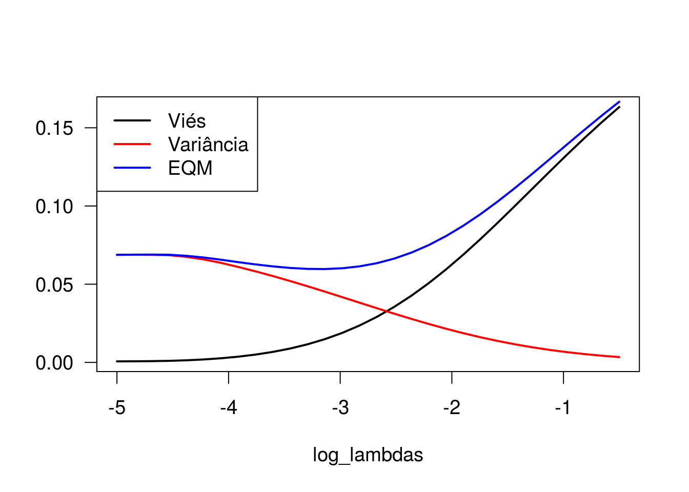
Para beta_2
bias_b2 <- apply(beta2, 2, bias_beta, beta = -0.25)
var_b2 <- apply(beta2, 2, var_beta)
eqm_beta2 <- apply(beta2, 2, eqm_beta, beta = -0.25)
par(cex = 1.2, las = 1)
plot(log_lambdas, bias_b2, type = 'l', lwd = 2, ylab = '', ylim = c(0,0.085))
lines(log_lambdas, var_b2, type = 'l', col = 'red', lwd = 2)
lines(log_lambdas, eqm_beta2, type = 'l', col = 'blue', lwd = 2)
legend(x = 'topleft', lty = 1, lwd = 2, col = c('black', 'red', 'blue'),
legend = c('Viés', 'Variância', 'EQM'))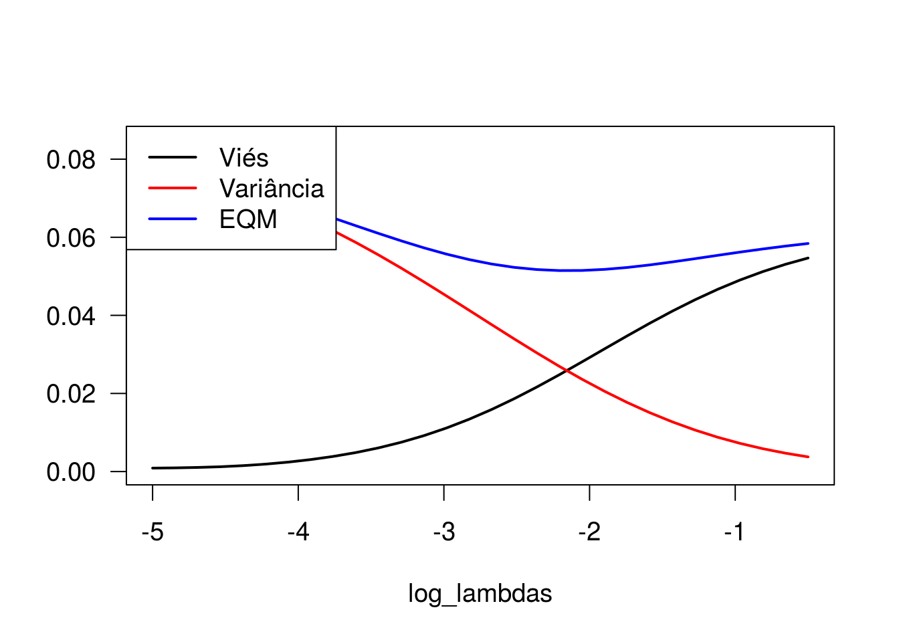
Observe que o viés é mínimo quando o parâmetro de regularização (lambda) é pequeno, enquanto a variância é máxima nesse cenário. À medida que aumentamos o valor de lambda, o viés aumenta e a variância vai a zero. Ao analisar o comportamento do erro quadrático médio, observamos que valores intermediários de lambda remetem a menores valores de EQM, ainda que as estimativas geradas apresentem algum grau de viés.
Para a aplicação dos métodos de regularização, vamos usar todas as covariáveis, exceto pedigree.
Matriz de covariáveis. Observe a exclusão da primeira coluna, que corresponde à coluna de uns (referente ao intercepto), que não deve ser incluída.
Convertendo a variável resposta para um vetor numérico. Será necessário para o processo de validação cruzada.
Lasso regression (penalização de primeira ordem)
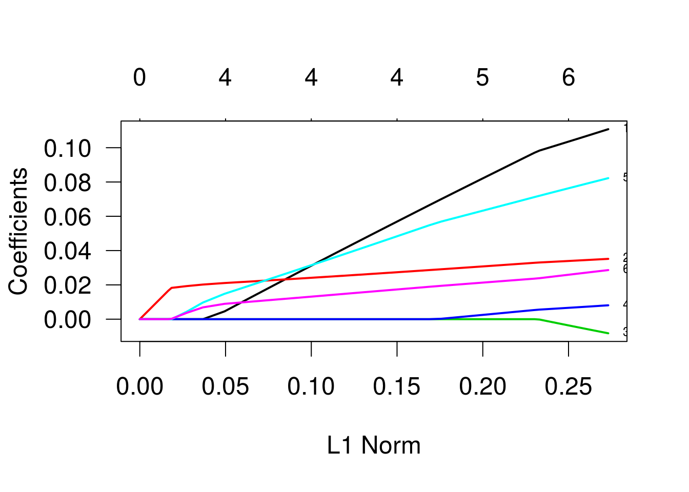
As trajetórias indicam as estimativas dos betas para diferentes valores do termo de penalização. Os valores que identificam as linhas se referem às variáveis, na ordem em que foram declaradas na especificação do modelo. As variáveis três e quatro (“bp” e “skin”) são as primeiras a se igualarem a zero, enquanto a variável “glu” é a última. Vamos ver um gráfico semelhante, mas agora em função de lambda, o parâmetro de penalização.
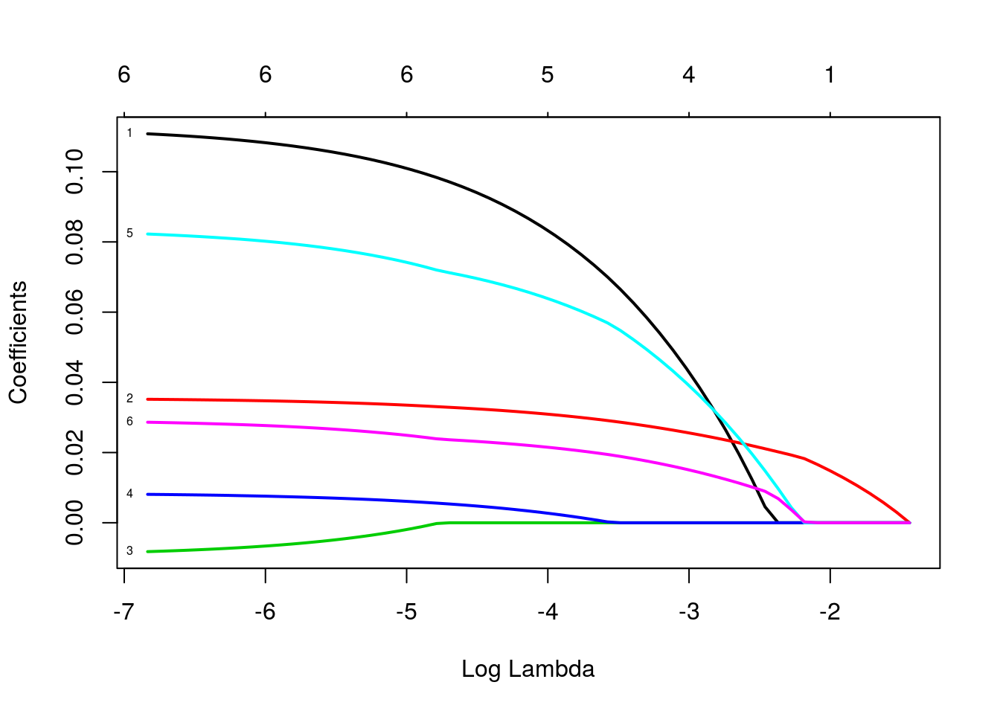
Vamos ver como ficaria o modelo ajustado para diferentes valores de lambda:
## 7 x 1 sparse Matrix of class "dgCMatrix"
## 1
## (Intercept) -8.883258
## npreg 0.110788
## glu 0.035175
## bp -0.008221
## skin 0.008095
## bmi 0.082246
## age 0.028638## 7 x 1 sparse Matrix of class "dgCMatrix"
## 1
## (Intercept) -7.801995
## npreg 0.083235
## glu 0.030928
## bp .
## skin 0.002717
## bmi 0.063865
## age 0.021507## 7 x 1 sparse Matrix of class "dgCMatrix"
## 1
## (Intercept) -2.5176
## npreg .
## glu 0.0148
## bp .
## skin .
## bmi .
## age .Usando a função glmnet, vamos determinar o valor de lambda que produz menor deviance, estimado via validação cruzada.
Ao especificar nfolds = 532, estamos usando a estratégia “leave one out”.
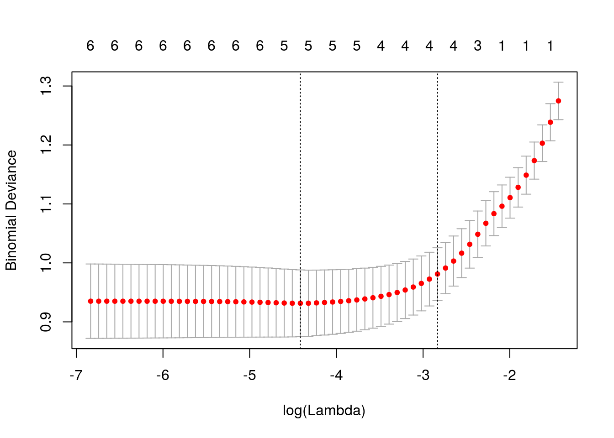
## [1] 0.01209Lambda ótimo.
## 7 x 1 sparse Matrix of class "dgCMatrix"
## 1
## (Intercept) -8.27105
## npreg 0.09246
## glu 0.03223
## bp .
## skin 0.00447
## bmi 0.06875
## age 0.02293Modelo ajustado com o lambda ótimo.
Agora, regressão ridge. Para isso, setamos alpha = 0.
g2 <- glmnet(x, y, family = 'binomial', alpha = 0)
par(cex = 1.5, las = 1)
plot(g2, las = 1, lwd = 2, label=TRUE)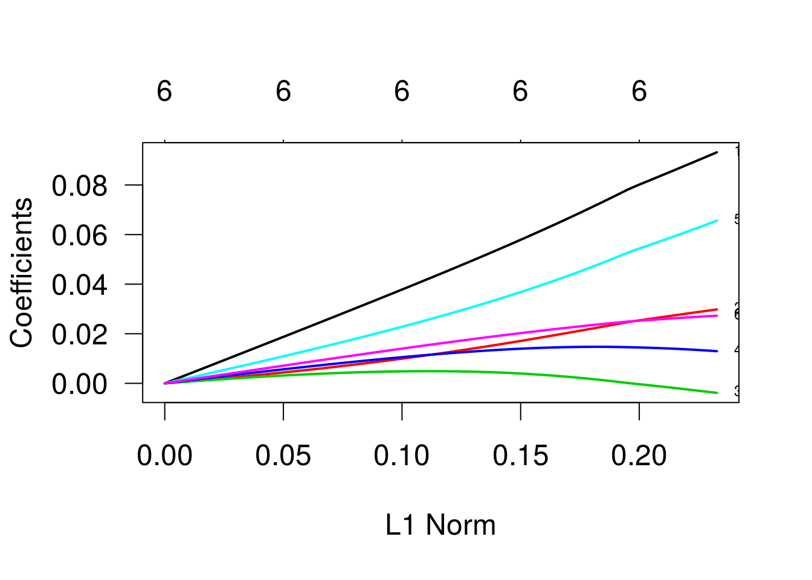
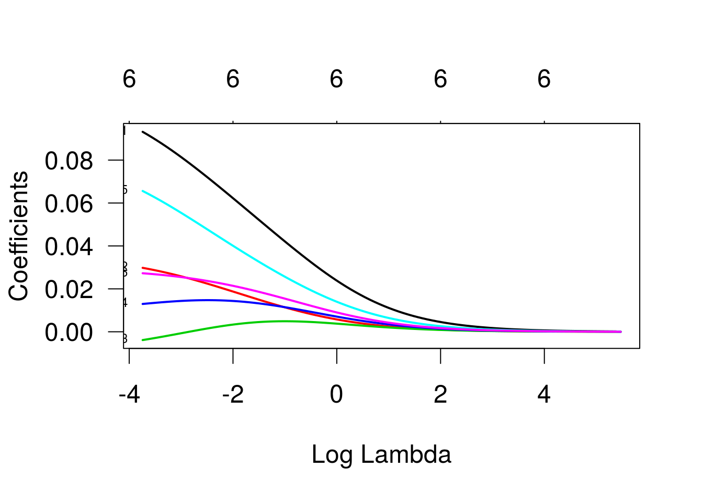
Validação cruzada.
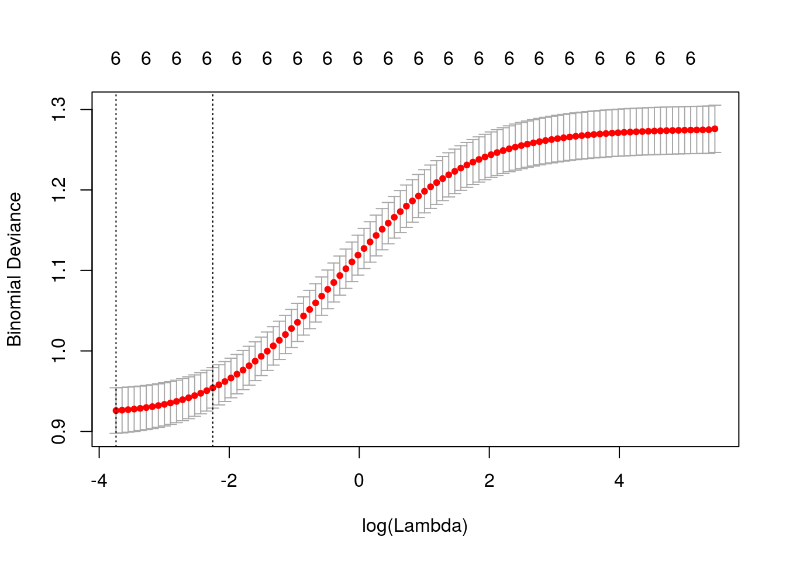
## [1] 0.02373Lambda ótimo.
## 7 x 1 sparse Matrix of class "dgCMatrix"
## 1
## (Intercept) -7.984636
## npreg 0.093178
## glu 0.029800
## bp -0.003856
## skin 0.012970
## bmi 0.065615
## age 0.027278Modelo ajustado com o lambda ótimo.
Finalizando, para alpha = 0.5.
g3 <- glmnet(x, y, family = 'binomial', alpha = 0.5)
par(cex = 1.5, las = 1)
plot(g3, las = 1, lwd = 2, label=TRUE)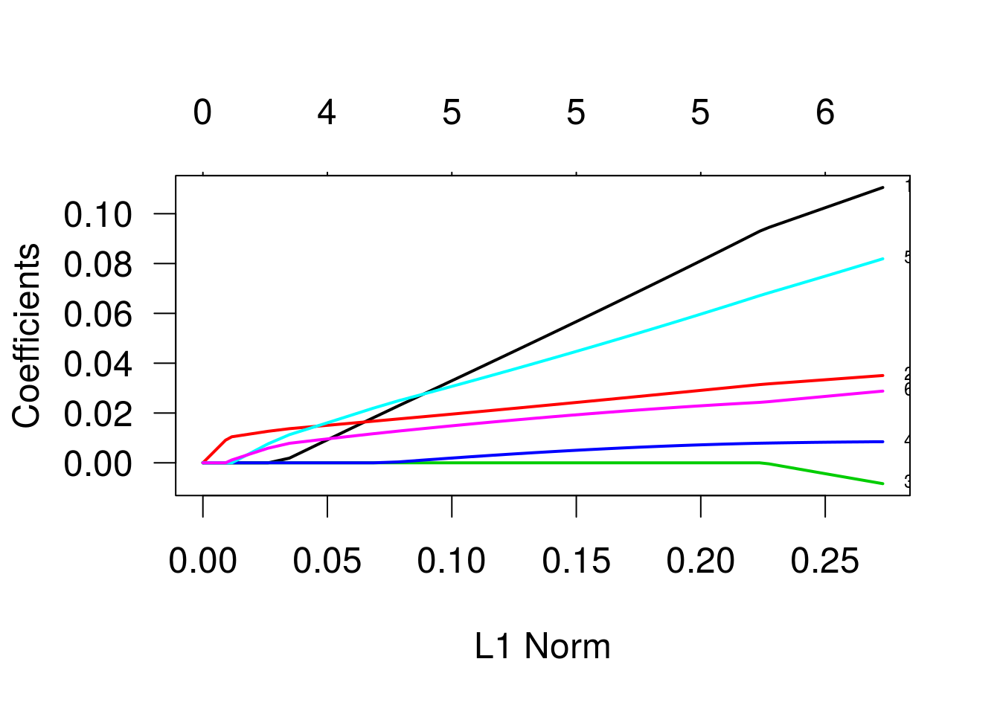
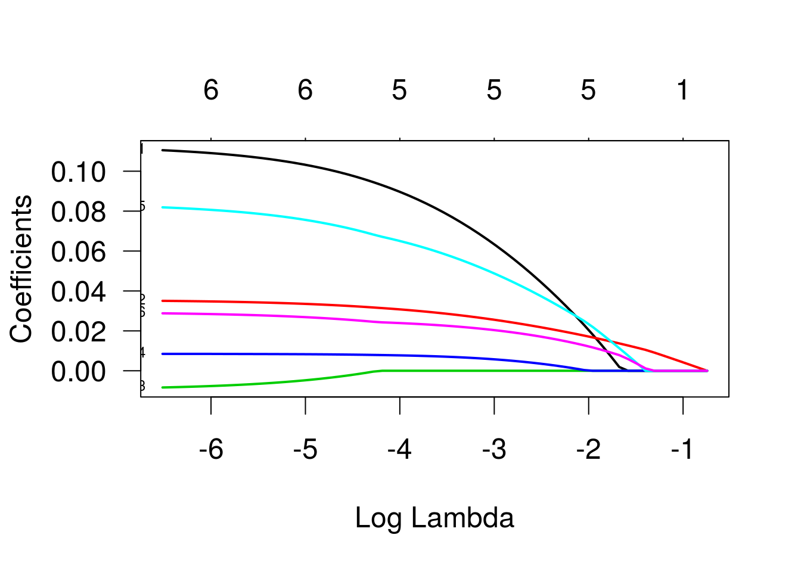
Validação cruzada.
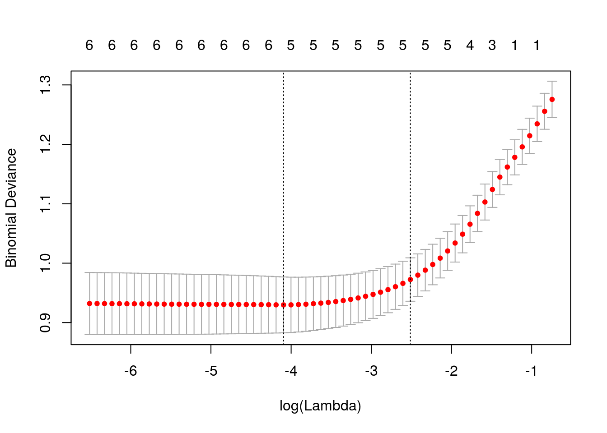
## [1] 0.01666Lambda ótimo.
## 7 x 1 sparse Matrix of class "dgCMatrix"
## 1
## (Intercept) -8.176902
## npreg 0.091399
## glu 0.031105
## bp .
## skin 0.007805
## bmi 0.066129
## age 0.024102Modelo ajustado com o lambda ótimo.
Agora, uma aplicação em dados simulados. Primeiramente, vamos simular valores para 20 variáveis explicativas. Vamos considerar distribuição normal para cada uma delas, com média zero e variância 1. Adicionalmente, vamos fixar covariância igual a 0.5 para cada par de variáveis (como as variâncias são iguais a um, então isso equivale a covariâncias iguais a 0.5). A função mvrnorm, do pacote MASS, permite simular amostras da distribuição normal multivariada, como é o caso.
Fixando uma semente, para que os resultados sejam reproduzíveis.
Tamanho da amostra.
## [,1] [,2] [,3] [,4] [,5] [,6] [,7] [,8] [,9] [,10] [,11] [,12] [,13]
## [1,] 1.0 0.5 0.5 0.5 0.5 0.5 0.5 0.5 0.5 0.5 0.5 0.5 0.5
## [2,] 0.5 1.0 0.5 0.5 0.5 0.5 0.5 0.5 0.5 0.5 0.5 0.5 0.5
## [3,] 0.5 0.5 1.0 0.5 0.5 0.5 0.5 0.5 0.5 0.5 0.5 0.5 0.5
## [4,] 0.5 0.5 0.5 1.0 0.5 0.5 0.5 0.5 0.5 0.5 0.5 0.5 0.5
## [5,] 0.5 0.5 0.5 0.5 1.0 0.5 0.5 0.5 0.5 0.5 0.5 0.5 0.5
## [6,] 0.5 0.5 0.5 0.5 0.5 1.0 0.5 0.5 0.5 0.5 0.5 0.5 0.5
## [7,] 0.5 0.5 0.5 0.5 0.5 0.5 1.0 0.5 0.5 0.5 0.5 0.5 0.5
## [8,] 0.5 0.5 0.5 0.5 0.5 0.5 0.5 1.0 0.5 0.5 0.5 0.5 0.5
## [9,] 0.5 0.5 0.5 0.5 0.5 0.5 0.5 0.5 1.0 0.5 0.5 0.5 0.5
## [10,] 0.5 0.5 0.5 0.5 0.5 0.5 0.5 0.5 0.5 1.0 0.5 0.5 0.5
## [11,] 0.5 0.5 0.5 0.5 0.5 0.5 0.5 0.5 0.5 0.5 1.0 0.5 0.5
## [12,] 0.5 0.5 0.5 0.5 0.5 0.5 0.5 0.5 0.5 0.5 0.5 1.0 0.5
## [13,] 0.5 0.5 0.5 0.5 0.5 0.5 0.5 0.5 0.5 0.5 0.5 0.5 1.0
## [14,] 0.5 0.5 0.5 0.5 0.5 0.5 0.5 0.5 0.5 0.5 0.5 0.5 0.5
## [15,] 0.5 0.5 0.5 0.5 0.5 0.5 0.5 0.5 0.5 0.5 0.5 0.5 0.5
## [16,] 0.5 0.5 0.5 0.5 0.5 0.5 0.5 0.5 0.5 0.5 0.5 0.5 0.5
## [17,] 0.5 0.5 0.5 0.5 0.5 0.5 0.5 0.5 0.5 0.5 0.5 0.5 0.5
## [18,] 0.5 0.5 0.5 0.5 0.5 0.5 0.5 0.5 0.5 0.5 0.5 0.5 0.5
## [19,] 0.5 0.5 0.5 0.5 0.5 0.5 0.5 0.5 0.5 0.5 0.5 0.5 0.5
## [20,] 0.5 0.5 0.5 0.5 0.5 0.5 0.5 0.5 0.5 0.5 0.5 0.5 0.5
## [,14] [,15] [,16] [,17] [,18] [,19] [,20]
## [1,] 0.5 0.5 0.5 0.5 0.5 0.5 0.5
## [2,] 0.5 0.5 0.5 0.5 0.5 0.5 0.5
## [3,] 0.5 0.5 0.5 0.5 0.5 0.5 0.5
## [4,] 0.5 0.5 0.5 0.5 0.5 0.5 0.5
## [5,] 0.5 0.5 0.5 0.5 0.5 0.5 0.5
## [6,] 0.5 0.5 0.5 0.5 0.5 0.5 0.5
## [7,] 0.5 0.5 0.5 0.5 0.5 0.5 0.5
## [8,] 0.5 0.5 0.5 0.5 0.5 0.5 0.5
## [9,] 0.5 0.5 0.5 0.5 0.5 0.5 0.5
## [10,] 0.5 0.5 0.5 0.5 0.5 0.5 0.5
## [11,] 0.5 0.5 0.5 0.5 0.5 0.5 0.5
## [12,] 0.5 0.5 0.5 0.5 0.5 0.5 0.5
## [13,] 0.5 0.5 0.5 0.5 0.5 0.5 0.5
## [14,] 1.0 0.5 0.5 0.5 0.5 0.5 0.5
## [15,] 0.5 1.0 0.5 0.5 0.5 0.5 0.5
## [16,] 0.5 0.5 1.0 0.5 0.5 0.5 0.5
## [17,] 0.5 0.5 0.5 1.0 0.5 0.5 0.5
## [18,] 0.5 0.5 0.5 0.5 1.0 0.5 0.5
## [19,] 0.5 0.5 0.5 0.5 0.5 1.0 0.5
## [20,] 0.5 0.5 0.5 0.5 0.5 0.5 1.0Matriz de variâncias e covariâncias.
Vetor de médias.
x <- data.frame(mvrnorm(n, mu = medias, Sigma = mat_cov))
dados_simul <- round(x,3)
names(dados_simul) <- paste('x', 1:20, sep = '')Dados simulados para as 20 variáveis explicativas.
Agora, condicional aos valores simulados para as variáveis explicativas, vamos simular resultados de uma variável resposta binária, conforme a seguinte especificação:
y|x ~ binomial(m = 1, pi = mu_x) logito(mu_x) = eta_x = x1 + 0.4x3 - 0.5x7 + 0.25x10 + 0.25x19, de forma que mu_x = exp(eta_x)/(exp(eta_x)+1).
eta_x <- with(dados_simul, 0.5*x1 + 0.3*x3 - 0.5*x7 - 0.5*x10 + 0.3*x19)
mu_x <- exp(eta_x)/(exp(eta_x) + 1)
dados_simul$y <- rbinom(n, 1, mu_x)
dados_simul$y## [1] 1 1 0 0 1 1 1 1 0 0 1 1 0 1 0 0 1 1 0 1 0 1 1 0 0 1 0 1 0 0 0 1 1 0
## [35] 0 0 1 1 1 1 0 0 0 0 1 0 1 0 1 1 0 0 1 0 0 0 0 1 0 0 1 1 0 1 1 1 1 1
## [69] 1 0 0 0 0 0 0 1 1 0 1 0 0 0 1 0 1 1 1 0 1 0 0 0 1 1 1 1 1 1 1 0 1 0
## [103] 0 1 1 0 1 1 1 1 0 1 1 0 1 0 0 1 1 0 0 0 1 1 0 0 0 1 0 1 0 0 0 1 0 1
## [137] 1 0 1 0 0 0 0 0 1 1 1 0 1 0 1 1 1 1 1 0 1 1 1 0 1 0 1 0 1 0 0 0 1 1
## [171] 0 1 0 0 1 1 0 0 0 0 0 1 0 1 0 1 0 0 1 0 0 1 1 1 0 1 0 0 1 1 0 1 1 1
## [205] 1 0 1 1 0 1 0 0 1 1 1 0 1 0 0 1 0 1 1 0 1 1 1 0 1 1 0 1 1 0 0 0 0 1
## [239] 1 1 1 1 0 0 1 0 0 0 1 1 0 0 0 0 0 1 0 1 0 0 0 1 1 1 0 0 0 1 0 1 0 0
## [273] 0 0 0 1 0 1 1 1 0 1 0 0 1 0 1 0 0 1 0 1 1 1 0 0 0 0 0 1 0 1 0 0 0 1
## [307] 0 0 1 1 0 1 0 1 1 1 1 1 1 1 1 0 1 1 1 0 1 1 0 0 1 0 0 0 0 1 1 1 1 0
## [341] 0 1 0 1 1 0 1 1 1 1 0 1 1 1 1 0 0 1 0 0 1 1 0 0 1 0 1 0 0 1 1 0 0 1
## [375] 1 0 0 0 0 1 1 0 0 0 1 0 0 1 1 0 1 0 0 0 0 0 0 0 1 0 0 0 0 0 0 1 0 0
## [409] 1 1 1 0 1 0 1 1 0 1 0 1 1 0 0 0 0 0 1 0 1 1 1 1 0 1 1 0 1 0 0 0 1 1
## [443] 0 1 1 0 1 1 1 1 1 1 0 0 1 1 1 1 0 0 1 1 1 0 1 0 0 1 1 0 1 0 1 1 1 0
## [477] 1 1 1 1 0 0 1 0 0 1 0 1 0 0 0 1 0 1 0 1 0 0 1 0 1 0 1 0 0 0 0 1 0 0
## [511] 1 0 1 0 1 1 1 0 0 0 1 0 1 0 0 1 0 1 0 1 1 0 1 0 1 0 0 1 0 0 0 1 0 1
## [545] 0 1 1 1 1 1 0 0 0 1 0 1 0 0 0 1 0 1 1 1 0 1 0 0 0 0 0 1 1 1 0 1 1 1
## [579] 1 0 0 1 1 0 1 1 0 0 0 1 0 0 1 1 0 0 1 0 1 0 1 1 0 1 0 0 0 0 0 0 0 1
## [613] 0 0 1 1 1 1 0 1 0 0 1 1 1 0 0 1 1 1 1 1 0 1 0 0 1 0 1 0 0 1 0 1 1 0
## [647] 1 0 1 1 0 1 0 1 1 0 0 1 0 0 1 0 0 0 0 1 1 0 1 0 1 0 1 0 1 0 1 0 1 0
## [681] 0 1 0 1 0 1 1 0 1 0 1 0 1 1 0 1 1 0 0 0 0 1 0 1 0 0 0 1 1 0 1 0 0 1
## [715] 0 1 1 1 0 1 0 0 0 0 1 0 0 0 0 1 1 0 0 1 1 1 0 1 0 0 1 0 0 1 0 0 1 0
## [749] 0 0 0 1 0 1 0 0 0 0 1 0 0 0 1 0 0 0 0 0 1 0 0 0 0 0 0 1 1 0 1 1 0 0
## [783] 1 1 1 1 1 0 0 1 1 0 0 0 0 0 0 0 0 1 0 1 0 0 1 1 0 1 0 0 1 0 0 0 1 1
## [817] 1 1 0 0 1 0 1 1 0 0 0 1 1 1 0 0 0 0 1 1 1 1 1 1 1 1 1 0 1 0 1 1 0 0
## [851] 1 0 1 0 1 1 0 1 0 0 1 0 1 1 0 1 0 0 0 1 1 1 1 1 0 1 1 0 1 1 0 0 0 1
## [885] 1 0 0 1 1 0 1 0 1 1 0 0 0 1 1 1 1 0 0 1 0 1 0 1 1 1 0 1 0 1 0 0 1 1
## [919] 0 0 0 1 1 1 1 1 0 0 1 0 1 0 0 0 0 1 1 1 1 0 1 1 1 1 0 1 1 0 1 1 0 1
## [953] 0 1 1 0 0 0 0 1 1 0 0 1 0 1 1 0 1 0 0 1 0 1 1 0 1 0 1 1 0 0 0 0 0 1
## [987] 0 1 0 1 1 1 0 0 0 1 1 0 1 0 0 1 0 1 1 1 0 1 1 0 1 1 0 1 1 0 1 1 1 1
## [1021] 1 0 1 1 0 0 1 0 1 0 0 0 1 1 1 1 1 0 1 0 1 1 0 1 0 0 1 0 1 1 1 1 1 1
## [1055] 0 1 0 0 1 0 0 1 0 0 0 1 0 0 0 0 0 1 1 1 0 1 0 0 0 1 1 0 1 1 1 0 0 0
## [1089] 0 0 1 0 1 0 0 0 1 1 1 1 1 1 1 1 1 0 1 0 1 0 0 1 1 1 0 0 0 1 0 1 0 0
## [1123] 1 1 1 1 0 1 0 1 1 0 1 0 1 0 1 1 1 1 1 0 0 0 1 0 1 1 1 1 0 1 0 1 0 1
## [1157] 0 0 0 0 1 0 0 1 1 1 1 0 0 0 1 0 0 1 0 0 1 0 1 0 0 1 1 0 0 1 1 0 1 0
## [1191] 1 1 1 0 1 0 1 1 1 1 1 0 1 1 1 1 1 0 1 1 0 1 1 1 1 1 1 1 1 1 1 0 1 0
## [1225] 0 0 1 0 1 1 0 0 1 1 0 0 0 0 0 0 0 1 0 1 0 1 1 0 1 1 1 1 1 0 1 1 1 0
## [1259] 1 1 0 1 0 0 1 0 0 0 0 0 0 1 0 0 0 0 0 1 1 1 1 0 0 1 1 1 0 0 0 0 0 1
## [1293] 1 1 1 1 0 0 1 1 0 0 0 1 0 0 0 0 0 0 1 1 0 0 0 0 1 1 0 0 1 0 1 1 1 1
## [1327] 0 0 1 0 1 1 1 0 1 0 0 0 0 0 1 1 1 0 1 0 1 1 1 1 0 0 1 1 0 0 1 0 0 0
## [1361] 0 0 1 1 1 0 1 0 1 0 0 0 0 1 0 1 1 0 0 0 0 0 1 1 0 1 0 1 1 1 0 0 0 0
## [1395] 1 0 1 1 1 1 0 1 0 0 0 1 1 1 0 1 0 1 0 1 0 1 0 1 1 0 0 0 1 1 0 1 1 1
## [1429] 1 1 1 0 0 0 1 0 1 0 0 0 1 1 1 1 1 1 0 0 1 1 0 0 1 0 1 1 1 1 0 1 0 0
## [1463] 1 0 1 0 1 0 0 1 1 1 0 1 0 1 0 1 0 1 0 0 1 1 0 0 1 1 0 1 0 1 0 0 1 1
## [1497] 1 1 0 0 1 0 1 0 0 0 1 1 1 0 0 1 0 0 0 0 0 1 1 0 0 0 0 0 1 1 0 1 0 0
## [1531] 0 0 0 1 1 1 0 1 0 0 1 1 1 0 0 0 1 1 0 0 0 0 1 1 1 0 0 1 0 0 1 0 1 1
## [1565] 1 1 0 0 1 1 1 1 1 1 1 0 0 0 1 1 0 1 0 1 1 0 0 0 0 1 0 1 1 0 1 1 1 0
## [1599] 1 1 1 0 0 0 1 1 0 0 1 0 0 0 0 1 1 1 1 1 1 1 0 0 1 1 1 1 0 1 1 0 0 1
## [1633] 1 1 0 0 0 0 0 0 0 1 0 0 1 1 0 1 1 0 0 0 0 1 0 1 1 1 1 0 0 0 1 1 0 1
## [1667] 0 1 0 1 1 1 0 0 0 0 1 1 1 1 0 1 0 1 1 0 0 1 0 1 1 0 1 1 1 0 0 1 0 0
## [1701] 1 0 1 1 0 1 1 0 1 0 0 0 0 0 1 0 1 1 0 0 0 0 0 1 0 0 1 0 1 1 1 1 1 1
## [1735] 1 1 0 1 1 1 1 1 1 0 0 0 1 0 0 0 1 1 0 1 0 1 1 0 0 0 0 0 1 1 0 0 1 0
## [1769] 1 1 1 0 0 0 0 1 1 0 0 1 0 1 1 0 1 1 1 1 1 0 0 1 0 0 0 0 0 0 0 0 1 0
## [1803] 0 0 0 1 0 0 0 1 1 0 0 1 1 0 0 0 0 1 0 0 1 0 0 1 0 0 0 1 1 0 0 1 1 1
## [1837] 1 0 1 0 1 0 0 1 1 1 1 0 1 0 1 1 0 0 0 1 0 1 0 0 0 1 1 1 0 0 1 0 1 0
## [1871] 0 1 1 0 0 0 0 0 0 0 1 1 1 1 0 0 1 1 1 1 1 1 0 0 0 0 1 1 1 1 1 0 1 1
## [1905] 1 0 0 1 1 1 0 1 1 1 0 0 1 1 0 0 0 0 0 1 1 1 0 0 0 0 1 0 1 1 0 1 0 1
## [1939] 1 1 1 1 0 0 0 1 1 1 0 0 1 0 0 1 1 0 1 0 0 1 1 1 1 1 1 1 0 0 0 1 0 0
## [1973] 1 1 1 1 0 0 0 1 1 0 0 1 0 0 0 1 0 0 1 1 0 1 0 0 1 1 1 0 0 1 1 0 0 1
## [2007] 1 0 0 0 1 0 1 1 1 1 1 0Valores simulados para a resposta.
Nosso objetivo aqui é aplicar os métodos de seleção de covariáveis e de regularização estudados em sala de aula e avaliar o quanto eles são capazes, nesta aplicação, de identificar as variáveis usadas na simulação.
Ajuste do glm com todas as covariáveis.
##
## Call:
## glm(formula = y ~ ., family = binomial, data = dados_simul)
##
## Deviance Residuals:
## Min 1Q Median 3Q Max
## -2.246 -1.081 0.471 1.079 2.139
##
## Coefficients:
## Estimate Std. Error z value Pr(>|z|)
## (Intercept) 0.03335 0.04763 0.70 0.484
## x1 0.45731 0.06700 6.83 8.7e-12 ***
## x2 -0.02159 0.06593 -0.33 0.743
## x3 0.37459 0.06676 5.61 2.0e-08 ***
## x4 0.09842 0.06557 1.50 0.133
## x5 0.00927 0.06674 0.14 0.889
## x6 -0.10733 0.06499 -1.65 0.099 .
## x7 -0.64054 0.06908 -9.27 < 2e-16 ***
## x8 -0.06316 0.06434 -0.98 0.326
## x9 0.01701 0.06646 0.26 0.798
## x10 -0.39721 0.06662 -5.96 2.5e-09 ***
## x11 0.13858 0.06458 2.15 0.032 *
## x12 -0.08598 0.06618 -1.30 0.194
## x13 0.13475 0.06600 2.04 0.041 *
## x14 -0.11155 0.06527 -1.71 0.087 .
## x15 0.07060 0.06666 1.06 0.290
## x16 -0.02675 0.06509 -0.41 0.681
## x17 -0.10436 0.06696 -1.56 0.119
## x18 -0.04778 0.06503 -0.73 0.462
## x19 0.35345 0.06637 5.33 1.0e-07 ***
## x20 -0.03002 0.06606 -0.45 0.650
## ---
## Signif. codes: 0 '***' 0.001 '**' 0.01 '*' 0.05 '.' 0.1 ' ' 1
##
## (Dispersion parameter for binomial family taken to be 1)
##
## Null deviance: 2797.5 on 2017 degrees of freedom
## Residual deviance: 2551.6 on 1997 degrees of freedom
## AIC: 2594
##
## Number of Fisher Scoring iterations: 4Ajuste do modelo nulo.
##
## Call:
## glm(formula = y ~ 1, family = binomial, data = dados_simul)
##
## Deviance Residuals:
## Min 1Q Median 3Q Max
## -1.18 -1.18 1.17 1.17 1.17
##
## Coefficients:
## Estimate Std. Error z value Pr(>|z|)
## (Intercept) 0.00991 0.04452 0.22 0.82
##
## (Dispersion parameter for binomial family taken to be 1)
##
## Null deviance: 2797.5 on 2017 degrees of freedom
## Residual deviance: 2797.5 on 2017 degrees of freedom
## AIC: 2799
##
## Number of Fisher Scoring iterations: 3Método 1: Backward com k = 2 (AIC)
## Start: AIC=2594
## y ~ x1 + x2 + x3 + x4 + x5 + x6 + x7 + x8 + x9 + x10 + x11 +
## x12 + x13 + x14 + x15 + x16 + x17 + x18 + x19 + x20
##
## Df Deviance AIC
## - x5 1 2552 2592
## - x9 1 2552 2592
## - x2 1 2552 2592
## - x16 1 2552 2592
## - x20 1 2552 2592
## - x18 1 2552 2592
## - x8 1 2553 2593
## - x15 1 2553 2593
## - x12 1 2553 2593
## <none> 2552 2594
## - x4 1 2554 2594
## - x17 1 2554 2594
## - x6 1 2554 2594
## - x14 1 2554 2594
## - x13 1 2556 2596
## - x11 1 2556 2596
## - x19 1 2581 2621
## - x3 1 2584 2624
## - x10 1 2588 2628
## - x1 1 2600 2640
## - x7 1 2644 2684
##
## Step: AIC=2592
## y ~ x1 + x2 + x3 + x4 + x6 + x7 + x8 + x9 + x10 + x11 + x12 +
## x13 + x14 + x15 + x16 + x17 + x18 + x19 + x20
##
## Df Deviance AIC
## - x9 1 2552 2590
## - x2 1 2552 2590
## - x16 1 2552 2590
## - x20 1 2552 2590
## - x18 1 2552 2590
## - x8 1 2553 2591
## - x15 1 2553 2591
## - x12 1 2553 2591
## <none> 2552 2592
## - x4 1 2554 2592
## - x17 1 2554 2592
## - x6 1 2554 2592
## - x14 1 2554 2592
## - x13 1 2556 2594
## - x11 1 2556 2594
## - x19 1 2581 2619
## - x3 1 2584 2622
## - x10 1 2588 2626
## - x1 1 2600 2638
## - x7 1 2644 2682
##
## Step: AIC=2590
## y ~ x1 + x2 + x3 + x4 + x6 + x7 + x8 + x10 + x11 + x12 + x13 +
## x14 + x15 + x16 + x17 + x18 + x19 + x20
##
## Df Deviance AIC
## - x2 1 2552 2588
## - x16 1 2552 2588
## - x20 1 2552 2588
## - x18 1 2552 2588
## - x8 1 2553 2589
## - x15 1 2553 2589
## - x12 1 2553 2589
## <none> 2552 2590
## - x4 1 2554 2590
## - x17 1 2554 2590
## - x6 1 2554 2590
## - x14 1 2554 2590
## - x13 1 2556 2592
## - x11 1 2556 2592
## - x19 1 2581 2617
## - x3 1 2585 2621
## - x10 1 2588 2624
## - x1 1 2600 2636
## - x7 1 2644 2680
##
## Step: AIC=2588
## y ~ x1 + x3 + x4 + x6 + x7 + x8 + x10 + x11 + x12 + x13 + x14 +
## x15 + x16 + x17 + x18 + x19 + x20
##
## Df Deviance AIC
## - x16 1 2552 2586
## - x20 1 2552 2586
## - x18 1 2552 2586
## - x8 1 2553 2587
## - x15 1 2553 2587
## - x12 1 2553 2587
## <none> 2552 2588
## - x4 1 2554 2588
## - x17 1 2554 2588
## - x6 1 2554 2588
## - x14 1 2555 2589
## - x13 1 2556 2590
## - x11 1 2556 2590
## - x19 1 2581 2615
## - x3 1 2585 2619
## - x10 1 2589 2623
## - x1 1 2600 2634
## - x7 1 2645 2679
##
## Step: AIC=2586
## y ~ x1 + x3 + x4 + x6 + x7 + x8 + x10 + x11 + x12 + x13 + x14 +
## x15 + x17 + x18 + x19 + x20
##
## Df Deviance AIC
## - x20 1 2552 2584
## - x18 1 2552 2584
## - x8 1 2553 2585
## - x15 1 2553 2585
## - x12 1 2554 2586
## <none> 2552 2586
## - x4 1 2554 2586
## - x17 1 2554 2586
## - x6 1 2555 2587
## - x14 1 2555 2587
## - x13 1 2556 2588
## - x11 1 2556 2588
## - x19 1 2581 2613
## - x3 1 2585 2617
## - x10 1 2589 2621
## - x1 1 2600 2632
## - x7 1 2646 2678
##
## Step: AIC=2584
## y ~ x1 + x3 + x4 + x6 + x7 + x8 + x10 + x11 + x12 + x13 + x14 +
## x15 + x17 + x18 + x19
##
## Df Deviance AIC
## - x18 1 2553 2583
## - x8 1 2553 2583
## - x15 1 2553 2583
## - x12 1 2554 2584
## <none> 2552 2584
## - x4 1 2554 2584
## - x17 1 2555 2585
## - x6 1 2555 2585
## - x14 1 2555 2585
## - x13 1 2556 2586
## - x11 1 2557 2587
## - x19 1 2581 2611
## - x3 1 2585 2615
## - x10 1 2590 2620
## - x1 1 2600 2630
## - x7 1 2647 2677
##
## Step: AIC=2583
## y ~ x1 + x3 + x4 + x6 + x7 + x8 + x10 + x11 + x12 + x13 + x14 +
## x15 + x17 + x19
##
## Df Deviance AIC
## - x15 1 2554 2582
## - x8 1 2554 2582
## <none> 2553 2583
## - x12 1 2555 2583
## - x4 1 2555 2583
## - x17 1 2556 2584
## - x6 1 2556 2584
## - x14 1 2556 2584
## - x13 1 2557 2585
## - x11 1 2557 2585
## - x19 1 2581 2609
## - x3 1 2585 2613
## - x10 1 2591 2619
## - x1 1 2600 2628
## - x7 1 2648 2676
##
## Step: AIC=2582
## y ~ x1 + x3 + x4 + x6 + x7 + x8 + x10 + x11 + x12 + x13 + x14 +
## x17 + x19
##
## Df Deviance AIC
## - x8 1 2555 2581
## - x12 1 2555 2581
## <none> 2554 2582
## - x4 1 2556 2582
## - x17 1 2556 2582
## - x6 1 2556 2582
## - x14 1 2557 2583
## - x13 1 2558 2584
## - x11 1 2558 2584
## - x19 1 2583 2609
## - x3 1 2586 2612
## - x10 1 2591 2617
## - x1 1 2603 2629
## - x7 1 2648 2674
##
## Step: AIC=2581
## y ~ x1 + x3 + x4 + x6 + x7 + x10 + x11 + x12 + x13 + x14 + x17 +
## x19
##
## Df Deviance AIC
## - x4 1 2557 2581
## <none> 2555 2581
## - x12 1 2557 2581
## - x17 1 2558 2582
## - x6 1 2558 2582
## - x14 1 2558 2582
## - x13 1 2559 2583
## - x11 1 2559 2583
## - x19 1 2584 2608
## - x3 1 2587 2611
## - x10 1 2593 2617
## - x1 1 2603 2627
## - x7 1 2650 2674
##
## Step: AIC=2581
## y ~ x1 + x3 + x6 + x7 + x10 + x11 + x12 + x13 + x14 + x17 + x19
##
## Df Deviance AIC
## - x12 1 2558 2580
## <none> 2557 2581
## - x6 1 2559 2581
## - x17 1 2559 2581
## - x14 1 2560 2582
## - x13 1 2561 2583
## - x11 1 2561 2583
## - x19 1 2588 2610
## - x3 1 2590 2612
## - x10 1 2594 2616
## - x1 1 2606 2628
## - x7 1 2650 2672
##
## Step: AIC=2580
## y ~ x1 + x3 + x6 + x7 + x10 + x11 + x13 + x14 + x17 + x19
##
## Df Deviance AIC
## <none> 2558 2580
## - x6 1 2561 2581
## - x17 1 2561 2581
## - x14 1 2562 2582
## - x13 1 2562 2582
## - x11 1 2563 2583
## - x19 1 2588 2608
## - x3 1 2591 2611
## - x10 1 2599 2619
## - x1 1 2607 2627
## - x7 1 2655 2675##
## Call:
## glm(formula = y ~ x1 + x3 + x6 + x7 + x10 + x11 + x13 + x14 +
## x17 + x19, family = binomial, data = dados_simul)
##
## Deviance Residuals:
## Min 1Q Median 3Q Max
## -2.20 -1.08 0.48 1.08 2.09
##
## Coefficients:
## Estimate Std. Error z value Pr(>|z|)
## (Intercept) 0.0350 0.0474 0.74 0.461
## x1 0.4445 0.0649 6.85 7.6e-12 ***
## x3 0.3649 0.0652 5.60 2.1e-08 ***
## x6 -0.1036 0.0632 -1.64 0.101
## x7 -0.6435 0.0679 -9.48 < 2e-16 ***
## x10 -0.4038 0.0646 -6.25 4.0e-10 ***
## x11 0.1290 0.0628 2.05 0.040 *
## x13 0.1237 0.0639 1.94 0.053 .
## x14 -0.1136 0.0633 -1.79 0.073 .
## x17 -0.1110 0.0651 -1.71 0.088 .
## x19 0.3471 0.0642 5.41 6.3e-08 ***
## ---
## Signif. codes: 0 '***' 0.001 '**' 0.01 '*' 0.05 '.' 0.1 ' ' 1
##
## (Dispersion parameter for binomial family taken to be 1)
##
## Null deviance: 2797.5 on 2017 degrees of freedom
## Residual deviance: 2558.5 on 2007 degrees of freedom
## AIC: 2580
##
## Number of Fisher Scoring iterations: 4Método 2: Backward com k = log(300) (BIC)
## Start: AIC=2711
## y ~ x1 + x2 + x3 + x4 + x5 + x6 + x7 + x8 + x9 + x10 + x11 +
## x12 + x13 + x14 + x15 + x16 + x17 + x18 + x19 + x20
##
## Df Deviance AIC
## - x5 1 2552 2704
## - x9 1 2552 2704
## - x2 1 2552 2704
## - x16 1 2552 2704
## - x20 1 2552 2704
## - x18 1 2552 2704
## - x8 1 2553 2705
## - x15 1 2553 2705
## - x12 1 2553 2705
## - x4 1 2554 2706
## - x17 1 2554 2706
## - x6 1 2554 2706
## - x14 1 2554 2707
## - x13 1 2556 2708
## - x11 1 2556 2708
## <none> 2552 2711
## - x19 1 2581 2733
## - x3 1 2584 2736
## - x10 1 2588 2740
## - x1 1 2600 2752
## - x7 1 2644 2796
##
## Step: AIC=2704
## y ~ x1 + x2 + x3 + x4 + x6 + x7 + x8 + x9 + x10 + x11 + x12 +
## x13 + x14 + x15 + x16 + x17 + x18 + x19 + x20
##
## Df Deviance AIC
## - x9 1 2552 2696
## - x2 1 2552 2696
## - x16 1 2552 2696
## - x20 1 2552 2696
## - x18 1 2552 2697
## - x8 1 2553 2697
## - x15 1 2553 2697
## - x12 1 2553 2698
## - x4 1 2554 2698
## - x17 1 2554 2699
## - x6 1 2554 2699
## - x14 1 2554 2699
## - x13 1 2556 2700
## - x11 1 2556 2701
## <none> 2552 2704
## - x19 1 2581 2725
## - x3 1 2584 2729
## - x10 1 2588 2733
## - x1 1 2600 2745
## - x7 1 2644 2788
##
## Step: AIC=2696
## y ~ x1 + x2 + x3 + x4 + x6 + x7 + x8 + x10 + x11 + x12 + x13 +
## x14 + x15 + x16 + x17 + x18 + x19 + x20
##
## Df Deviance AIC
## - x2 1 2552 2689
## - x16 1 2552 2689
## - x20 1 2552 2689
## - x18 1 2552 2689
## - x8 1 2553 2690
## - x15 1 2553 2690
## - x12 1 2553 2690
## - x4 1 2554 2691
## - x17 1 2554 2691
## - x6 1 2554 2691
## - x14 1 2554 2691
## - x13 1 2556 2693
## - x11 1 2556 2693
## <none> 2552 2696
## - x19 1 2581 2718
## - x3 1 2585 2722
## - x10 1 2588 2725
## - x1 1 2600 2737
## - x7 1 2644 2781
##
## Step: AIC=2689
## y ~ x1 + x3 + x4 + x6 + x7 + x8 + x10 + x11 + x12 + x13 + x14 +
## x15 + x16 + x17 + x18 + x19 + x20
##
## Df Deviance AIC
## - x16 1 2552 2681
## - x20 1 2552 2681
## - x18 1 2552 2682
## - x8 1 2553 2682
## - x15 1 2553 2682
## - x12 1 2553 2683
## - x4 1 2554 2683
## - x17 1 2554 2684
## - x6 1 2554 2684
## - x14 1 2555 2684
## - x13 1 2556 2685
## - x11 1 2556 2686
## <none> 2552 2689
## - x19 1 2581 2710
## - x3 1 2585 2714
## - x10 1 2589 2718
## - x1 1 2600 2730
## - x7 1 2645 2774
##
## Step: AIC=2681
## y ~ x1 + x3 + x4 + x6 + x7 + x8 + x10 + x11 + x12 + x13 + x14 +
## x15 + x17 + x18 + x19 + x20
##
## Df Deviance AIC
## - x20 1 2552 2674
## - x18 1 2552 2674
## - x8 1 2553 2675
## - x15 1 2553 2675
## - x12 1 2554 2675
## - x4 1 2554 2676
## - x17 1 2554 2676
## - x6 1 2555 2676
## - x14 1 2555 2677
## - x13 1 2556 2678
## - x11 1 2556 2678
## <none> 2552 2681
## - x19 1 2581 2703
## - x3 1 2585 2706
## - x10 1 2589 2711
## - x1 1 2600 2722
## - x7 1 2646 2768
##
## Step: AIC=2674
## y ~ x1 + x3 + x4 + x6 + x7 + x8 + x10 + x11 + x12 + x13 + x14 +
## x15 + x17 + x18 + x19
##
## Df Deviance AIC
## - x18 1 2553 2667
## - x8 1 2553 2667
## - x15 1 2553 2667
## - x12 1 2554 2668
## - x4 1 2554 2669
## - x17 1 2555 2669
## - x6 1 2555 2669
## - x14 1 2555 2669
## - x13 1 2556 2670
## - x11 1 2557 2671
## <none> 2552 2674
## - x19 1 2581 2695
## - x3 1 2585 2699
## - x10 1 2590 2704
## - x1 1 2600 2715
## - x7 1 2647 2761
##
## Step: AIC=2667
## y ~ x1 + x3 + x4 + x6 + x7 + x8 + x10 + x11 + x12 + x13 + x14 +
## x15 + x17 + x19
##
## Df Deviance AIC
## - x15 1 2554 2660
## - x8 1 2554 2660
## - x12 1 2555 2661
## - x4 1 2555 2661
## - x17 1 2556 2662
## - x6 1 2556 2662
## - x14 1 2556 2663
## - x13 1 2557 2663
## - x11 1 2557 2664
## <none> 2553 2667
## - x19 1 2581 2688
## - x3 1 2585 2691
## - x10 1 2591 2698
## - x1 1 2600 2707
## - x7 1 2648 2754
##
## Step: AIC=2660
## y ~ x1 + x3 + x4 + x6 + x7 + x8 + x10 + x11 + x12 + x13 + x14 +
## x17 + x19
##
## Df Deviance AIC
## - x8 1 2555 2654
## - x12 1 2555 2654
## - x4 1 2556 2655
## - x17 1 2556 2655
## - x6 1 2556 2655
## - x14 1 2557 2656
## - x13 1 2558 2657
## - x11 1 2558 2657
## <none> 2554 2660
## - x19 1 2583 2682
## - x3 1 2586 2685
## - x10 1 2591 2690
## - x1 1 2603 2702
## - x7 1 2648 2747
##
## Step: AIC=2654
## y ~ x1 + x3 + x4 + x6 + x7 + x10 + x11 + x12 + x13 + x14 + x17 +
## x19
##
## Df Deviance AIC
## - x4 1 2557 2648
## - x12 1 2557 2648
## - x17 1 2558 2649
## - x6 1 2558 2649
## - x14 1 2558 2649
## - x13 1 2559 2650
## - x11 1 2559 2650
## <none> 2555 2654
## - x19 1 2584 2675
## - x3 1 2587 2678
## - x10 1 2593 2684
## - x1 1 2603 2694
## - x7 1 2650 2741
##
## Step: AIC=2648
## y ~ x1 + x3 + x6 + x7 + x10 + x11 + x12 + x13 + x14 + x17 + x19
##
## Df Deviance AIC
## - x12 1 2558 2642
## - x6 1 2559 2643
## - x17 1 2559 2643
## - x14 1 2560 2643
## - x13 1 2561 2645
## - x11 1 2561 2645
## <none> 2557 2648
## - x19 1 2588 2672
## - x3 1 2590 2673
## - x10 1 2594 2678
## - x1 1 2606 2690
## - x7 1 2650 2734
##
## Step: AIC=2642
## y ~ x1 + x3 + x6 + x7 + x10 + x11 + x13 + x14 + x17 + x19
##
## Df Deviance AIC
## - x6 1 2561 2637
## - x17 1 2561 2638
## - x14 1 2562 2638
## - x13 1 2562 2638
## - x11 1 2563 2639
## <none> 2558 2642
## - x19 1 2588 2664
## - x3 1 2591 2667
## - x10 1 2599 2675
## - x1 1 2607 2683
## - x7 1 2655 2731
##
## Step: AIC=2637
## y ~ x1 + x3 + x7 + x10 + x11 + x13 + x14 + x17 + x19
##
## Df Deviance AIC
## - x13 1 2565 2633
## - x11 1 2565 2633
## - x17 1 2565 2633
## - x14 1 2565 2634
## <none> 2561 2637
## - x19 1 2590 2658
## - x3 1 2591 2660
## - x10 1 2604 2672
## - x1 1 2608 2677
## - x7 1 2662 2731
##
## Step: AIC=2633
## y ~ x1 + x3 + x7 + x10 + x11 + x14 + x17 + x19
##
## Df Deviance AIC
## - x17 1 2567 2628
## - x14 1 2568 2629
## - x11 1 2569 2629
## <none> 2565 2633
## - x19 1 2596 2657
## - x3 1 2598 2658
## - x10 1 2605 2666
## - x1 1 2616 2677
## - x7 1 2663 2723
##
## Step: AIC=2628
## y ~ x1 + x3 + x7 + x10 + x11 + x14 + x19
##
## Df Deviance AIC
## - x11 1 2571 2624
## - x14 1 2571 2625
## <none> 2567 2628
## - x19 1 2596 2650
## - x3 1 2598 2652
## - x10 1 2611 2665
## - x1 1 2616 2670
## - x7 1 2670 2723
##
## Step: AIC=2624
## y ~ x1 + x3 + x7 + x10 + x14 + x19
##
## Df Deviance AIC
## - x14 1 2574 2619
## <none> 2571 2624
## - x19 1 2603 2649
## - x3 1 2605 2651
## - x10 1 2612 2658
## - x1 1 2623 2669
## - x7 1 2670 2715
##
## Step: AIC=2619
## y ~ x1 + x3 + x7 + x10 + x19
##
## Df Deviance AIC
## <none> 2574 2619
## - x19 1 2603 2641
## - x3 1 2606 2644
## - x10 1 2619 2657
## - x1 1 2624 2662
## - x7 1 2681 2719##
## Call:
## glm(formula = y ~ x1 + x3 + x7 + x10 + x19, family = binomial,
## data = dados_simul)
##
## Deviance Residuals:
## Min 1Q Median 3Q Max
## -2.080 -1.081 0.481 1.074 2.015
##
## Coefficients:
## Estimate Std. Error z value Pr(>|z|)
## (Intercept) 0.0367 0.0472 0.78 0.44
## x1 0.4294 0.0619 6.94 3.9e-12 ***
## x3 0.3439 0.0616 5.58 2.4e-08 ***
## x7 -0.6443 0.0647 -9.95 < 2e-16 ***
## x10 -0.4107 0.0620 -6.63 3.4e-11 ***
## x19 0.3242 0.0603 5.37 7.8e-08 ***
## ---
## Signif. codes: 0 '***' 0.001 '**' 0.01 '*' 0.05 '.' 0.1 ' ' 1
##
## (Dispersion parameter for binomial family taken to be 1)
##
## Null deviance: 2797.5 on 2017 degrees of freedom
## Residual deviance: 2573.8 on 2012 degrees of freedom
## AIC: 2586
##
## Number of Fisher Scoring iterations: 4Método 3: Stepwise com k = 2 (AIC)
## Start: AIC=2594
## y ~ x1 + x2 + x3 + x4 + x5 + x6 + x7 + x8 + x9 + x10 + x11 +
## x12 + x13 + x14 + x15 + x16 + x17 + x18 + x19 + x20
##
## Df Deviance AIC
## - x5 1 2552 2592
## - x9 1 2552 2592
## - x2 1 2552 2592
## - x16 1 2552 2592
## - x20 1 2552 2592
## - x18 1 2552 2592
## - x8 1 2553 2593
## - x15 1 2553 2593
## - x12 1 2553 2593
## <none> 2552 2594
## - x4 1 2554 2594
## - x17 1 2554 2594
## - x6 1 2554 2594
## - x14 1 2554 2594
## - x13 1 2556 2596
## - x11 1 2556 2596
## - x19 1 2581 2621
## - x3 1 2584 2624
## - x10 1 2588 2628
## - x1 1 2600 2640
## - x7 1 2644 2684
##
## Step: AIC=2592
## y ~ x1 + x2 + x3 + x4 + x6 + x7 + x8 + x9 + x10 + x11 + x12 +
## x13 + x14 + x15 + x16 + x17 + x18 + x19 + x20
##
## Df Deviance AIC
## - x9 1 2552 2590
## - x2 1 2552 2590
## - x16 1 2552 2590
## - x20 1 2552 2590
## - x18 1 2552 2590
## - x8 1 2553 2591
## - x15 1 2553 2591
## - x12 1 2553 2591
## <none> 2552 2592
## - x4 1 2554 2592
## - x17 1 2554 2592
## - x6 1 2554 2592
## - x14 1 2554 2592
## + x5 1 2552 2594
## - x13 1 2556 2594
## - x11 1 2556 2594
## - x19 1 2581 2619
## - x3 1 2584 2622
## - x10 1 2588 2626
## - x1 1 2600 2638
## - x7 1 2644 2682
##
## Step: AIC=2590
## y ~ x1 + x2 + x3 + x4 + x6 + x7 + x8 + x10 + x11 + x12 + x13 +
## x14 + x15 + x16 + x17 + x18 + x19 + x20
##
## Df Deviance AIC
## - x2 1 2552 2588
## - x16 1 2552 2588
## - x20 1 2552 2588
## - x18 1 2552 2588
## - x8 1 2553 2589
## - x15 1 2553 2589
## - x12 1 2553 2589
## <none> 2552 2590
## - x4 1 2554 2590
## - x17 1 2554 2590
## - x6 1 2554 2590
## - x14 1 2554 2590
## + x9 1 2552 2592
## + x5 1 2552 2592
## - x13 1 2556 2592
## - x11 1 2556 2592
## - x19 1 2581 2617
## - x3 1 2585 2621
## - x10 1 2588 2624
## - x1 1 2600 2636
## - x7 1 2644 2680
##
## Step: AIC=2588
## y ~ x1 + x3 + x4 + x6 + x7 + x8 + x10 + x11 + x12 + x13 + x14 +
## x15 + x16 + x17 + x18 + x19 + x20
##
## Df Deviance AIC
## - x16 1 2552 2586
## - x20 1 2552 2586
## - x18 1 2552 2586
## - x8 1 2553 2587
## - x15 1 2553 2587
## - x12 1 2553 2587
## <none> 2552 2588
## - x4 1 2554 2588
## - x17 1 2554 2588
## - x6 1 2554 2588
## - x14 1 2555 2589
## + x2 1 2552 2590
## + x9 1 2552 2590
## + x5 1 2552 2590
## - x13 1 2556 2590
## - x11 1 2556 2590
## - x19 1 2581 2615
## - x3 1 2585 2619
## - x10 1 2589 2623
## - x1 1 2600 2634
## - x7 1 2645 2679
##
## Step: AIC=2586
## y ~ x1 + x3 + x4 + x6 + x7 + x8 + x10 + x11 + x12 + x13 + x14 +
## x15 + x17 + x18 + x19 + x20
##
## Df Deviance AIC
## - x20 1 2552 2584
## - x18 1 2552 2584
## - x8 1 2553 2585
## - x15 1 2553 2585
## - x12 1 2554 2586
## <none> 2552 2586
## - x4 1 2554 2586
## - x17 1 2554 2586
## - x6 1 2555 2587
## - x14 1 2555 2587
## + x16 1 2552 2588
## + x2 1 2552 2588
## + x9 1 2552 2588
## + x5 1 2552 2588
## - x13 1 2556 2588
## - x11 1 2556 2588
## - x19 1 2581 2613
## - x3 1 2585 2617
## - x10 1 2589 2621
## - x1 1 2600 2632
## - x7 1 2646 2678
##
## Step: AIC=2584
## y ~ x1 + x3 + x4 + x6 + x7 + x8 + x10 + x11 + x12 + x13 + x14 +
## x15 + x17 + x18 + x19
##
## Df Deviance AIC
## - x18 1 2553 2583
## - x8 1 2553 2583
## - x15 1 2553 2583
## - x12 1 2554 2584
## <none> 2552 2584
## - x4 1 2554 2584
## - x17 1 2555 2585
## - x6 1 2555 2585
## - x14 1 2555 2585
## + x20 1 2552 2586
## + x16 1 2552 2586
## + x2 1 2552 2586
## + x9 1 2552 2586
## + x5 1 2552 2586
## - x13 1 2556 2586
## - x11 1 2557 2587
## - x19 1 2581 2611
## - x3 1 2585 2615
## - x10 1 2590 2620
## - x1 1 2600 2630
## - x7 1 2647 2677
##
## Step: AIC=2583
## y ~ x1 + x3 + x4 + x6 + x7 + x8 + x10 + x11 + x12 + x13 + x14 +
## x15 + x17 + x19
##
## Df Deviance AIC
## - x15 1 2554 2582
## - x8 1 2554 2582
## <none> 2553 2583
## - x12 1 2555 2583
## - x4 1 2555 2583
## - x17 1 2556 2584
## - x6 1 2556 2584
## - x14 1 2556 2584
## + x18 1 2552 2584
## + x20 1 2552 2584
## + x16 1 2553 2585
## + x2 1 2553 2585
## - x13 1 2557 2585
## + x9 1 2553 2585
## + x5 1 2553 2585
## - x11 1 2557 2585
## - x19 1 2581 2609
## - x3 1 2585 2613
## - x10 1 2591 2619
## - x1 1 2600 2628
## - x7 1 2648 2676
##
## Step: AIC=2582
## y ~ x1 + x3 + x4 + x6 + x7 + x8 + x10 + x11 + x12 + x13 + x14 +
## x17 + x19
##
## Df Deviance AIC
## - x8 1 2555 2581
## - x12 1 2555 2581
## <none> 2554 2582
## - x4 1 2556 2582
## - x17 1 2556 2582
## - x6 1 2556 2582
## - x14 1 2557 2583
## + x15 1 2553 2583
## + x18 1 2553 2583
## + x20 1 2553 2583
## + x16 1 2553 2583
## + x2 1 2553 2583
## + x9 1 2554 2584
## + x5 1 2554 2584
## - x13 1 2558 2584
## - x11 1 2558 2584
## - x19 1 2583 2609
## - x3 1 2586 2612
## - x10 1 2591 2617
## - x1 1 2603 2629
## - x7 1 2648 2674
##
## Step: AIC=2581
## y ~ x1 + x3 + x4 + x6 + x7 + x10 + x11 + x12 + x13 + x14 + x17 +
## x19
##
## Df Deviance AIC
## - x4 1 2557 2581
## <none> 2555 2581
## - x12 1 2557 2581
## + x8 1 2554 2582
## - x17 1 2558 2582
## - x6 1 2558 2582
## + x15 1 2554 2582
## - x14 1 2558 2582
## + x18 1 2554 2582
## + x20 1 2554 2582
## + x16 1 2554 2582
## + x2 1 2555 2583
## - x13 1 2559 2583
## + x9 1 2555 2583
## + x5 1 2555 2583
## - x11 1 2559 2583
## - x19 1 2584 2608
## - x3 1 2587 2611
## - x10 1 2593 2617
## - x1 1 2603 2627
## - x7 1 2650 2674
##
## Step: AIC=2581
## y ~ x1 + x3 + x6 + x7 + x10 + x11 + x12 + x13 + x14 + x17 + x19
##
## Df Deviance AIC
## - x12 1 2558 2580
## <none> 2557 2581
## + x4 1 2555 2581
## - x6 1 2559 2581
## - x17 1 2559 2581
## - x14 1 2560 2582
## + x15 1 2556 2582
## + x8 1 2556 2582
## + x18 1 2556 2582
## + x20 1 2557 2583
## + x2 1 2557 2583
## + x16 1 2557 2583
## + x9 1 2557 2583
## + x5 1 2557 2583
## - x13 1 2561 2583
## - x11 1 2561 2583
## - x19 1 2588 2610
## - x3 1 2590 2612
## - x10 1 2594 2616
## - x1 1 2606 2628
## - x7 1 2650 2672
##
## Step: AIC=2580
## y ~ x1 + x3 + x6 + x7 + x10 + x11 + x13 + x14 + x17 + x19
##
## Df Deviance AIC
## <none> 2558 2580
## + x12 1 2557 2581
## + x4 1 2557 2581
## - x6 1 2561 2581
## + x8 1 2557 2581
## - x17 1 2561 2581
## - x14 1 2562 2582
## + x15 1 2558 2582
## + x18 1 2558 2582
## + x20 1 2558 2582
## + x16 1 2558 2582
## - x13 1 2562 2582
## + x2 1 2558 2582
## + x9 1 2558 2582
## + x5 1 2558 2582
## - x11 1 2563 2583
## - x19 1 2588 2608
## - x3 1 2591 2611
## - x10 1 2599 2619
## - x1 1 2607 2627
## - x7 1 2655 2675##
## Call:
## glm(formula = y ~ x1 + x3 + x6 + x7 + x10 + x11 + x13 + x14 +
## x17 + x19, family = binomial, data = dados_simul)
##
## Deviance Residuals:
## Min 1Q Median 3Q Max
## -2.20 -1.08 0.48 1.08 2.09
##
## Coefficients:
## Estimate Std. Error z value Pr(>|z|)
## (Intercept) 0.0350 0.0474 0.74 0.461
## x1 0.4445 0.0649 6.85 7.6e-12 ***
## x3 0.3649 0.0652 5.60 2.1e-08 ***
## x6 -0.1036 0.0632 -1.64 0.101
## x7 -0.6435 0.0679 -9.48 < 2e-16 ***
## x10 -0.4038 0.0646 -6.25 4.0e-10 ***
## x11 0.1290 0.0628 2.05 0.040 *
## x13 0.1237 0.0639 1.94 0.053 .
## x14 -0.1136 0.0633 -1.79 0.073 .
## x17 -0.1110 0.0651 -1.71 0.088 .
## x19 0.3471 0.0642 5.41 6.3e-08 ***
## ---
## Signif. codes: 0 '***' 0.001 '**' 0.01 '*' 0.05 '.' 0.1 ' ' 1
##
## (Dispersion parameter for binomial family taken to be 1)
##
## Null deviance: 2797.5 on 2017 degrees of freedom
## Residual deviance: 2558.5 on 2007 degrees of freedom
## AIC: 2580
##
## Number of Fisher Scoring iterations: 4Método 4: Stepwise com k = log(300) (BIC)
## Start: AIC=2682
## y ~ x1 + x2 + x3 + x4 + x5 + x6 + x7 + x8 + x9 + x10 + x11 +
## x12 + x13 + x14 + x15 + x16 + x17 + x18 + x19 + x20
##
## Df Deviance AIC
## - x5 1 2552 2676
## - x9 1 2552 2676
## - x2 1 2552 2676
## - x16 1 2552 2676
## - x20 1 2552 2676
## - x18 1 2552 2676
## - x8 1 2553 2677
## - x15 1 2553 2677
## - x12 1 2553 2678
## - x4 1 2554 2678
## - x17 1 2554 2678
## - x6 1 2554 2679
## - x14 1 2554 2679
## - x13 1 2556 2680
## - x11 1 2556 2680
## <none> 2552 2682
## - x19 1 2581 2705
## - x3 1 2584 2708
## - x10 1 2588 2712
## - x1 1 2600 2724
## - x7 1 2644 2768
##
## Step: AIC=2676
## y ~ x1 + x2 + x3 + x4 + x6 + x7 + x8 + x9 + x10 + x11 + x12 +
## x13 + x14 + x15 + x16 + x17 + x18 + x19 + x20
##
## Df Deviance AIC
## - x9 1 2552 2670
## - x2 1 2552 2670
## - x16 1 2552 2670
## - x20 1 2552 2670
## - x18 1 2552 2670
## - x8 1 2553 2671
## - x15 1 2553 2671
## - x12 1 2553 2671
## - x4 1 2554 2672
## - x17 1 2554 2672
## - x6 1 2554 2672
## - x14 1 2554 2673
## - x13 1 2556 2674
## - x11 1 2556 2674
## <none> 2552 2676
## + x5 1 2552 2682
## - x19 1 2581 2699
## - x3 1 2584 2702
## - x10 1 2588 2706
## - x1 1 2600 2718
## - x7 1 2644 2762
##
## Step: AIC=2670
## y ~ x1 + x2 + x3 + x4 + x6 + x7 + x8 + x10 + x11 + x12 + x13 +
## x14 + x15 + x16 + x17 + x18 + x19 + x20
##
## Df Deviance AIC
## - x2 1 2552 2664
## - x16 1 2552 2664
## - x20 1 2552 2664
## - x18 1 2552 2664
## - x8 1 2553 2664
## - x15 1 2553 2665
## - x12 1 2553 2665
## - x4 1 2554 2666
## - x17 1 2554 2666
## - x6 1 2554 2666
## - x14 1 2554 2666
## - x13 1 2556 2668
## - x11 1 2556 2668
## <none> 2552 2670
## + x9 1 2552 2676
## + x5 1 2552 2676
## - x19 1 2581 2693
## - x3 1 2585 2696
## - x10 1 2588 2700
## - x1 1 2600 2712
## - x7 1 2644 2756
##
## Step: AIC=2664
## y ~ x1 + x3 + x4 + x6 + x7 + x8 + x10 + x11 + x12 + x13 + x14 +
## x15 + x16 + x17 + x18 + x19 + x20
##
## Df Deviance AIC
## - x16 1 2552 2658
## - x20 1 2552 2658
## - x18 1 2552 2658
## - x8 1 2553 2658
## - x15 1 2553 2659
## - x12 1 2553 2659
## - x4 1 2554 2660
## - x17 1 2554 2660
## - x6 1 2554 2660
## - x14 1 2555 2660
## - x13 1 2556 2662
## - x11 1 2556 2662
## <none> 2552 2664
## + x2 1 2552 2670
## + x9 1 2552 2670
## + x5 1 2552 2670
## - x19 1 2581 2687
## - x3 1 2585 2690
## - x10 1 2589 2694
## - x1 1 2600 2706
## - x7 1 2645 2751
##
## Step: AIC=2658
## y ~ x1 + x3 + x4 + x6 + x7 + x8 + x10 + x11 + x12 + x13 + x14 +
## x15 + x17 + x18 + x19 + x20
##
## Df Deviance AIC
## - x20 1 2552 2652
## - x18 1 2552 2652
## - x8 1 2553 2652
## - x15 1 2553 2652
## - x12 1 2554 2653
## - x4 1 2554 2654
## - x17 1 2554 2654
## - x6 1 2555 2654
## - x14 1 2555 2654
## - x13 1 2556 2655
## - x11 1 2556 2656
## <none> 2552 2658
## + x16 1 2552 2664
## + x2 1 2552 2664
## + x9 1 2552 2664
## + x5 1 2552 2664
## - x19 1 2581 2680
## - x3 1 2585 2684
## - x10 1 2589 2689
## - x1 1 2600 2700
## - x7 1 2646 2745
##
## Step: AIC=2652
## y ~ x1 + x3 + x4 + x6 + x7 + x8 + x10 + x11 + x12 + x13 + x14 +
## x15 + x17 + x18 + x19
##
## Df Deviance AIC
## - x18 1 2553 2646
## - x8 1 2553 2646
## - x15 1 2553 2646
## - x12 1 2554 2647
## - x4 1 2554 2648
## - x17 1 2555 2648
## - x6 1 2555 2648
## - x14 1 2555 2649
## - x13 1 2556 2649
## - x11 1 2557 2650
## <none> 2552 2652
## + x20 1 2552 2658
## + x16 1 2552 2658
## + x2 1 2552 2658
## + x9 1 2552 2658
## + x5 1 2552 2658
## - x19 1 2581 2674
## - x3 1 2585 2678
## - x10 1 2590 2684
## - x1 1 2600 2694
## - x7 1 2647 2740
##
## Step: AIC=2646
## y ~ x1 + x3 + x4 + x6 + x7 + x8 + x10 + x11 + x12 + x13 + x14 +
## x15 + x17 + x19
##
## Df Deviance AIC
## - x15 1 2554 2641
## - x8 1 2554 2641
## - x12 1 2555 2642
## - x4 1 2555 2642
## - x17 1 2556 2643
## - x6 1 2556 2643
## - x14 1 2556 2643
## - x13 1 2557 2644
## - x11 1 2557 2644
## <none> 2553 2646
## + x18 1 2552 2652
## + x20 1 2552 2652
## + x16 1 2553 2652
## + x2 1 2553 2652
## + x9 1 2553 2652
## + x5 1 2553 2652
## - x19 1 2581 2668
## - x3 1 2585 2672
## - x10 1 2591 2678
## - x1 1 2600 2687
## - x7 1 2648 2735
##
## Step: AIC=2641
## y ~ x1 + x3 + x4 + x6 + x7 + x8 + x10 + x11 + x12 + x13 + x14 +
## x17 + x19
##
## Df Deviance AIC
## - x8 1 2555 2635
## - x12 1 2555 2636
## - x4 1 2556 2637
## - x17 1 2556 2637
## - x6 1 2556 2637
## - x14 1 2557 2637
## - x13 1 2558 2639
## - x11 1 2558 2639
## <none> 2554 2641
## + x15 1 2553 2646
## + x18 1 2553 2646
## + x20 1 2553 2647
## + x16 1 2553 2647
## + x2 1 2553 2647
## + x9 1 2554 2647
## + x5 1 2554 2647
## - x19 1 2583 2664
## - x3 1 2586 2667
## - x10 1 2591 2672
## - x1 1 2603 2684
## - x7 1 2648 2729
##
## Step: AIC=2635
## y ~ x1 + x3 + x4 + x6 + x7 + x10 + x11 + x12 + x13 + x14 + x17 +
## x19
##
## Df Deviance AIC
## - x4 1 2557 2631
## - x12 1 2557 2631
## - x17 1 2558 2632
## - x6 1 2558 2632
## - x14 1 2558 2633
## - x13 1 2559 2633
## - x11 1 2559 2634
## <none> 2555 2635
## + x8 1 2554 2641
## + x15 1 2554 2641
## + x18 1 2554 2641
## + x20 1 2554 2641
## + x16 1 2554 2641
## + x2 1 2555 2642
## + x9 1 2555 2642
## + x5 1 2555 2642
## - x19 1 2584 2658
## - x3 1 2587 2661
## - x10 1 2593 2668
## - x1 1 2603 2678
## - x7 1 2650 2724
##
## Step: AIC=2631
## y ~ x1 + x3 + x6 + x7 + x10 + x11 + x12 + x13 + x14 + x17 + x19
##
## Df Deviance AIC
## - x12 1 2558 2627
## - x6 1 2559 2628
## - x17 1 2559 2628
## - x14 1 2560 2628
## - x13 1 2561 2629
## - x11 1 2561 2630
## <none> 2557 2631
## + x4 1 2555 2635
## + x15 1 2556 2637
## + x8 1 2556 2637
## + x18 1 2556 2637
## + x20 1 2557 2637
## + x2 1 2557 2637
## + x16 1 2557 2637
## + x9 1 2557 2637
## + x5 1 2557 2637
## - x19 1 2588 2656
## - x3 1 2590 2658
## - x10 1 2594 2662
## - x1 1 2606 2675
## - x7 1 2650 2719
##
## Step: AIC=2627
## y ~ x1 + x3 + x6 + x7 + x10 + x11 + x13 + x14 + x17 + x19
##
## Df Deviance AIC
## - x6 1 2561 2623
## - x17 1 2561 2624
## - x14 1 2562 2624
## - x13 1 2562 2624
## - x11 1 2563 2625
## <none> 2558 2627
## + x12 1 2557 2631
## + x4 1 2557 2631
## + x8 1 2557 2632
## + x15 1 2558 2632
## + x18 1 2558 2632
## + x20 1 2558 2633
## + x16 1 2558 2633
## + x2 1 2558 2633
## + x9 1 2558 2633
## + x5 1 2558 2633
## - x19 1 2588 2651
## - x3 1 2591 2653
## - x10 1 2599 2661
## - x1 1 2607 2669
## - x7 1 2655 2717
##
## Step: AIC=2623
## y ~ x1 + x3 + x7 + x10 + x11 + x13 + x14 + x17 + x19
##
## Df Deviance AIC
## - x13 1 2565 2621
## - x11 1 2565 2621
## - x17 1 2565 2621
## - x14 1 2565 2621
## <none> 2561 2623
## + x6 1 2558 2627
## + x12 1 2559 2628
## + x8 1 2560 2628
## + x4 1 2560 2628
## + x18 1 2560 2629
## + x15 1 2561 2629
## + x20 1 2561 2629
## + x16 1 2561 2629
## + x2 1 2561 2629
## + x5 1 2561 2630
## + x9 1 2561 2630
## - x19 1 2590 2646
## - x3 1 2591 2647
## - x10 1 2604 2660
## - x1 1 2608 2664
## - x7 1 2662 2718
##
## Step: AIC=2621
## y ~ x1 + x3 + x7 + x10 + x11 + x14 + x17 + x19
##
## Df Deviance AIC
## - x17 1 2567 2617
## - x14 1 2568 2618
## - x11 1 2569 2618
## <none> 2565 2621
## + x13 1 2561 2623
## + x6 1 2562 2624
## + x4 1 2563 2625
## + x12 1 2563 2625
## + x8 1 2564 2626
## + x15 1 2564 2626
## + x18 1 2564 2626
## + x16 1 2564 2627
## + x20 1 2564 2627
## + x2 1 2564 2627
## + x9 1 2565 2627
## + x5 1 2565 2627
## - x19 1 2596 2646
## - x3 1 2598 2647
## - x10 1 2605 2654
## - x1 1 2616 2666
## - x7 1 2663 2712
##
## Step: AIC=2617
## y ~ x1 + x3 + x7 + x10 + x11 + x14 + x19
##
## Df Deviance AIC
## - x11 1 2571 2614
## - x14 1 2571 2615
## <none> 2567 2617
## + x6 1 2565 2620
## + x17 1 2565 2621
## + x13 1 2565 2621
## + x12 1 2566 2622
## + x8 1 2566 2622
## + x4 1 2566 2622
## + x18 1 2567 2622
## + x20 1 2567 2623
## + x15 1 2567 2623
## + x16 1 2567 2623
## + x2 1 2567 2623
## + x5 1 2567 2623
## + x9 1 2567 2623
## - x19 1 2596 2640
## - x3 1 2598 2642
## - x10 1 2611 2655
## - x1 1 2616 2660
## - x7 1 2670 2713
##
## Step: AIC=2614
## y ~ x1 + x3 + x7 + x10 + x14 + x19
##
## Df Deviance AIC
## - x14 1 2574 2611
## <none> 2571 2614
## + x11 1 2567 2617
## + x13 1 2568 2617
## + x17 1 2569 2618
## + x6 1 2569 2618
## + x4 1 2569 2619
## + x12 1 2570 2619
## + x8 1 2570 2620
## + x15 1 2570 2620
## + x18 1 2570 2620
## + x20 1 2571 2620
## + x16 1 2571 2620
## + x2 1 2571 2620
## + x9 1 2571 2620
## + x5 1 2571 2620
## - x19 1 2603 2640
## - x3 1 2605 2642
## - x10 1 2612 2650
## - x1 1 2623 2661
## - x7 1 2670 2707
##
## Step: AIC=2611
## y ~ x1 + x3 + x7 + x10 + x19
##
## Df Deviance AIC
## <none> 2574 2611
## + x14 1 2571 2614
## + x6 1 2571 2614
## + x17 1 2571 2614
## + x13 1 2571 2615
## + x11 1 2571 2615
## + x12 1 2572 2616
## + x8 1 2572 2616
## + x4 1 2573 2616
## + x18 1 2573 2616
## + x20 1 2573 2617
## + x16 1 2573 2617
## + x15 1 2573 2617
## + x2 1 2573 2617
## + x5 1 2574 2617
## + x9 1 2574 2617
## - x19 1 2603 2634
## - x3 1 2606 2637
## - x10 1 2619 2650
## - x1 1 2624 2655
## - x7 1 2681 2712##
## Call:
## glm(formula = y ~ x1 + x3 + x7 + x10 + x19, family = binomial,
## data = dados_simul)
##
## Deviance Residuals:
## Min 1Q Median 3Q Max
## -2.080 -1.081 0.481 1.074 2.015
##
## Coefficients:
## Estimate Std. Error z value Pr(>|z|)
## (Intercept) 0.0367 0.0472 0.78 0.44
## x1 0.4294 0.0619 6.94 3.9e-12 ***
## x3 0.3439 0.0616 5.58 2.4e-08 ***
## x7 -0.6443 0.0647 -9.95 < 2e-16 ***
## x10 -0.4107 0.0620 -6.63 3.4e-11 ***
## x19 0.3242 0.0603 5.37 7.8e-08 ***
## ---
## Signif. codes: 0 '***' 0.001 '**' 0.01 '*' 0.05 '.' 0.1 ' ' 1
##
## (Dispersion parameter for binomial family taken to be 1)
##
## Null deviance: 2797.5 on 2017 degrees of freedom
## Residual deviance: 2573.8 on 2012 degrees of freedom
## AIC: 2586
##
## Number of Fisher Scoring iterations: 4Método 5: Forward com k = 2 (AIC)
## Start: AIC=2799
## y ~ 1
##
## Df Deviance AIC
## + x7 1 2760 2764
## + x1 1 2771 2775
## + x19 1 2778 2782
## + x10 1 2781 2785
## + x3 1 2782 2786
## + x13 1 2794 2798
## + x4 1 2795 2799
## <none> 2797 2799
## + x11 1 2796 2800
## + x15 1 2797 2801
## + x12 1 2797 2801
## + x6 1 2797 2801
## + x5 1 2797 2801
## + x14 1 2797 2801
## + x20 1 2797 2801
## + x9 1 2797 2801
## + x17 1 2797 2801
## + x18 1 2797 2801
## + x8 1 2797 2801
## + x2 1 2797 2801
## + x16 1 2797 2801
##
## Step: AIC=2764
## y ~ x7
##
## Df Deviance AIC
## + x1 1 2671 2677
## + x19 1 2685 2691
## + x3 1 2691 2697
## + x13 1 2727 2733
## + x11 1 2731 2737
## + x4 1 2732 2738
## + x15 1 2736 2742
## + x5 1 2741 2747
## + x9 1 2743 2749
## + x20 1 2744 2750
## + x2 1 2745 2751
## + x18 1 2746 2752
## + x8 1 2747 2753
## + x16 1 2747 2753
## + x17 1 2749 2755
## + x14 1 2750 2756
## + x6 1 2751 2757
## + x12 1 2752 2758
## <none> 2760 2764
## + x10 1 2759 2765
##
## Step: AIC=2677
## y ~ x7 + x1
##
## Df Deviance AIC
## + x3 1 2639 2647
## + x19 1 2639 2647
## + x10 1 2650 2658
## + x13 1 2665 2673
## + x11 1 2665 2673
## + x4 1 2666 2674
## + x15 1 2669 2677
## <none> 2671 2677
## + x5 1 2670 2678
## + x9 1 2670 2678
## + x2 1 2671 2679
## + x16 1 2671 2679
## + x20 1 2671 2679
## + x18 1 2671 2679
## + x12 1 2671 2679
## + x6 1 2671 2679
## + x14 1 2671 2679
## + x8 1 2671 2679
## + x17 1 2671 2679
##
## Step: AIC=2647
## y ~ x7 + x1 + x3
##
## Df Deviance AIC
## + x10 1 2603 2613
## + x19 1 2619 2629
## + x6 1 2636 2646
## + x17 1 2637 2647
## + x12 1 2637 2647
## + x14 1 2637 2647
## <none> 2639 2647
## + x11 1 2638 2648
## + x13 1 2638 2648
## + x8 1 2638 2648
## + x20 1 2638 2648
## + x4 1 2639 2649
## + x18 1 2639 2649
## + x16 1 2639 2649
## + x2 1 2639 2649
## + x9 1 2639 2649
## + x15 1 2639 2649
## + x5 1 2639 2649
##
## Step: AIC=2613
## y ~ x7 + x1 + x3 + x10
##
## Df Deviance AIC
## + x19 1 2574 2586
## + x13 1 2597 2609
## + x11 1 2597 2609
## + x4 1 2599 2611
## + x15 1 2601 2613
## <none> 2603 2613
## + x5 1 2602 2614
## + x9 1 2603 2615
## + x6 1 2603 2615
## + x14 1 2603 2615
## + x2 1 2603 2615
## + x17 1 2603 2615
## + x16 1 2603 2615
## + x8 1 2603 2615
## + x18 1 2603 2615
## + x12 1 2603 2615
## + x20 1 2603 2615
##
## Step: AIC=2586
## y ~ x7 + x1 + x3 + x10 + x19
##
## Df Deviance AIC
## + x14 1 2571 2585
## + x6 1 2571 2585
## + x17 1 2571 2585
## + x13 1 2571 2585
## + x11 1 2571 2585
## <none> 2574 2586
## + x12 1 2572 2586
## + x8 1 2572 2586
## + x4 1 2573 2587
## + x18 1 2573 2587
## + x20 1 2573 2587
## + x16 1 2573 2587
## + x15 1 2573 2587
## + x2 1 2573 2587
## + x5 1 2574 2588
## + x9 1 2574 2588
##
## Step: AIC=2585
## y ~ x7 + x1 + x3 + x10 + x19 + x14
##
## Df Deviance AIC
## + x11 1 2567 2583
## + x13 1 2568 2584
## + x17 1 2569 2585
## + x6 1 2569 2585
## <none> 2571 2585
## + x4 1 2569 2585
## + x12 1 2570 2586
## + x8 1 2570 2586
## + x15 1 2570 2586
## + x18 1 2570 2586
## + x20 1 2571 2587
## + x16 1 2571 2587
## + x2 1 2571 2587
## + x9 1 2571 2587
## + x5 1 2571 2587
##
## Step: AIC=2583
## y ~ x7 + x1 + x3 + x10 + x19 + x14 + x11
##
## Df Deviance AIC
## + x6 1 2565 2583
## + x17 1 2565 2583
## + x13 1 2565 2583
## <none> 2567 2583
## + x12 1 2566 2584
## + x8 1 2566 2584
## + x4 1 2566 2584
## + x18 1 2567 2585
## + x20 1 2567 2585
## + x15 1 2567 2585
## + x16 1 2567 2585
## + x2 1 2567 2585
## + x5 1 2567 2585
## + x9 1 2567 2585
##
## Step: AIC=2583
## y ~ x7 + x1 + x3 + x10 + x19 + x14 + x11 + x6
##
## Df Deviance AIC
## + x13 1 2561 2581
## + x17 1 2562 2582
## <none> 2565 2583
## + x4 1 2563 2583
## + x12 1 2563 2583
## + x8 1 2564 2584
## + x15 1 2564 2584
## + x18 1 2564 2584
## + x20 1 2564 2584
## + x16 1 2564 2584
## + x2 1 2564 2584
## + x9 1 2564 2584
## + x5 1 2565 2585
##
## Step: AIC=2581
## y ~ x7 + x1 + x3 + x10 + x19 + x14 + x11 + x6 + x13
##
## Df Deviance AIC
## + x17 1 2558 2580
## + x12 1 2559 2581
## <none> 2561 2581
## + x8 1 2560 2582
## + x4 1 2560 2582
## + x18 1 2561 2583
## + x20 1 2561 2583
## + x15 1 2561 2583
## + x16 1 2561 2583
## + x2 1 2561 2583
## + x5 1 2561 2583
## + x9 1 2561 2583
##
## Step: AIC=2580
## y ~ x7 + x1 + x3 + x10 + x19 + x14 + x11 + x6 + x13 + x17
##
## Df Deviance AIC
## <none> 2558 2580
## + x12 1 2557 2581
## + x4 1 2557 2581
## + x8 1 2557 2581
## + x15 1 2558 2582
## + x18 1 2558 2582
## + x20 1 2558 2582
## + x16 1 2558 2582
## + x2 1 2558 2582
## + x9 1 2558 2582
## + x5 1 2558 2582##
## Call:
## glm(formula = y ~ x7 + x1 + x3 + x10 + x19 + x14 + x11 + x6 +
## x13 + x17, family = binomial, data = dados_simul)
##
## Deviance Residuals:
## Min 1Q Median 3Q Max
## -2.20 -1.08 0.48 1.08 2.09
##
## Coefficients:
## Estimate Std. Error z value Pr(>|z|)
## (Intercept) 0.0350 0.0474 0.74 0.461
## x7 -0.6435 0.0679 -9.48 < 2e-16 ***
## x1 0.4445 0.0649 6.85 7.6e-12 ***
## x3 0.3649 0.0652 5.60 2.1e-08 ***
## x10 -0.4038 0.0646 -6.25 4.0e-10 ***
## x19 0.3471 0.0642 5.41 6.3e-08 ***
## x14 -0.1136 0.0633 -1.79 0.073 .
## x11 0.1290 0.0628 2.05 0.040 *
## x6 -0.1036 0.0632 -1.64 0.101
## x13 0.1237 0.0639 1.94 0.053 .
## x17 -0.1110 0.0651 -1.71 0.088 .
## ---
## Signif. codes: 0 '***' 0.001 '**' 0.01 '*' 0.05 '.' 0.1 ' ' 1
##
## (Dispersion parameter for binomial family taken to be 1)
##
## Null deviance: 2797.5 on 2017 degrees of freedom
## Residual deviance: 2558.5 on 2007 degrees of freedom
## AIC: 2580
##
## Number of Fisher Scoring iterations: 4Método 6: Forward com k = log(300) (BIC)
## Start: AIC=2805
## y ~ 1
##
## Df Deviance AIC
## + x7 1 2760 2775
## + x1 1 2771 2787
## + x19 1 2778 2794
## + x10 1 2781 2797
## + x3 1 2782 2798
## <none> 2797 2805
## + x13 1 2794 2809
## + x4 1 2795 2811
## + x11 1 2796 2811
## + x15 1 2797 2812
## + x12 1 2797 2812
## + x6 1 2797 2812
## + x5 1 2797 2812
## + x14 1 2797 2813
## + x20 1 2797 2813
## + x9 1 2797 2813
## + x17 1 2797 2813
## + x18 1 2797 2813
## + x8 1 2797 2813
## + x2 1 2797 2813
## + x16 1 2797 2813
##
## Step: AIC=2775
## y ~ x7
##
## Df Deviance AIC
## + x1 1 2671 2694
## + x19 1 2685 2708
## + x3 1 2691 2714
## + x13 1 2727 2750
## + x11 1 2731 2754
## + x4 1 2732 2755
## + x15 1 2736 2759
## + x5 1 2741 2764
## + x9 1 2743 2766
## + x20 1 2744 2767
## + x2 1 2745 2768
## + x18 1 2746 2769
## + x8 1 2747 2770
## + x16 1 2747 2770
## + x17 1 2749 2772
## + x14 1 2750 2773
## + x6 1 2751 2774
## <none> 2760 2775
## + x12 1 2752 2775
## + x10 1 2759 2781
##
## Step: AIC=2694
## y ~ x7 + x1
##
## Df Deviance AIC
## + x3 1 2639 2670
## + x19 1 2639 2670
## + x10 1 2650 2680
## <none> 2671 2694
## + x13 1 2665 2695
## + x11 1 2665 2695
## + x4 1 2666 2697
## + x15 1 2669 2699
## + x5 1 2670 2700
## + x9 1 2670 2700
## + x2 1 2671 2701
## + x16 1 2671 2701
## + x20 1 2671 2702
## + x18 1 2671 2702
## + x12 1 2671 2702
## + x6 1 2671 2702
## + x14 1 2671 2702
## + x8 1 2671 2702
## + x17 1 2671 2702
##
## Step: AIC=2670
## y ~ x7 + x1 + x3
##
## Df Deviance AIC
## + x10 1 2603 2641
## + x19 1 2619 2657
## <none> 2639 2670
## + x6 1 2636 2674
## + x17 1 2637 2675
## + x12 1 2637 2675
## + x14 1 2637 2675
## + x11 1 2638 2676
## + x13 1 2638 2676
## + x8 1 2638 2676
## + x20 1 2638 2676
## + x4 1 2639 2677
## + x18 1 2639 2677
## + x16 1 2639 2677
## + x2 1 2639 2677
## + x9 1 2639 2677
## + x15 1 2639 2677
## + x5 1 2639 2677
##
## Step: AIC=2641
## y ~ x7 + x1 + x3 + x10
##
## Df Deviance AIC
## + x19 1 2574 2619
## <none> 2603 2641
## + x13 1 2597 2643
## + x11 1 2597 2643
## + x4 1 2599 2644
## + x15 1 2601 2646
## + x5 1 2602 2648
## + x9 1 2603 2648
## + x6 1 2603 2648
## + x14 1 2603 2649
## + x2 1 2603 2649
## + x17 1 2603 2649
## + x16 1 2603 2649
## + x8 1 2603 2649
## + x18 1 2603 2649
## + x12 1 2603 2649
## + x20 1 2603 2649
##
## Step: AIC=2619
## y ~ x7 + x1 + x3 + x10 + x19
##
## Df Deviance AIC
## <none> 2574 2619
## + x14 1 2571 2624
## + x6 1 2571 2624
## + x17 1 2571 2624
## + x13 1 2571 2625
## + x11 1 2571 2625
## + x12 1 2572 2625
## + x8 1 2572 2626
## + x4 1 2573 2626
## + x18 1 2573 2626
## + x20 1 2573 2627
## + x16 1 2573 2627
## + x15 1 2573 2627
## + x2 1 2573 2627
## + x5 1 2574 2627
## + x9 1 2574 2627##
## Call:
## glm(formula = y ~ x7 + x1 + x3 + x10 + x19, family = binomial,
## data = dados_simul)
##
## Deviance Residuals:
## Min 1Q Median 3Q Max
## -2.080 -1.081 0.481 1.074 2.015
##
## Coefficients:
## Estimate Std. Error z value Pr(>|z|)
## (Intercept) 0.0367 0.0472 0.78 0.44
## x7 -0.6443 0.0647 -9.95 < 2e-16 ***
## x1 0.4294 0.0619 6.94 3.9e-12 ***
## x3 0.3439 0.0616 5.58 2.4e-08 ***
## x10 -0.4107 0.0620 -6.63 3.4e-11 ***
## x19 0.3242 0.0603 5.37 7.8e-08 ***
## ---
## Signif. codes: 0 '***' 0.001 '**' 0.01 '*' 0.05 '.' 0.1 ' ' 1
##
## (Dispersion parameter for binomial family taken to be 1)
##
## Null deviance: 2797.5 on 2017 degrees of freedom
## Residual deviance: 2573.8 on 2012 degrees of freedom
## AIC: 2586
##
## Number of Fisher Scoring iterations: 4Agora, usando o método lasso.
Matriz de covariáveis. Observe a exclusão da primeira coluna, que corresponde à coluna de uns (referente ao intercepto), que não deve ser incluída.
Lasso regression (penalização de primeira ordem)
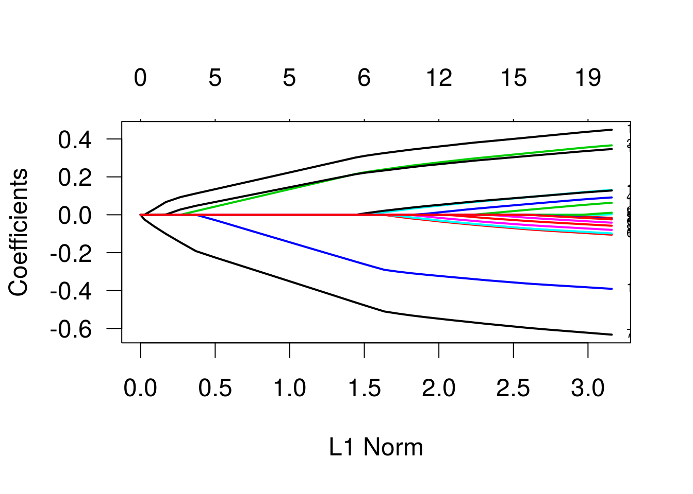
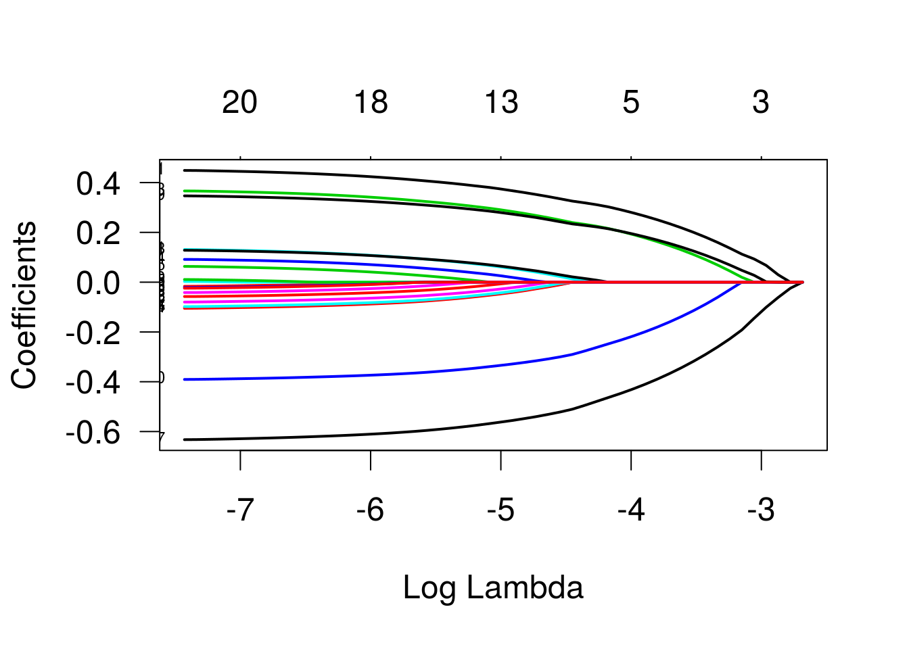
Gráficos das estimativas vs termo de penalização e vs lambda.
Usando validação cruzada para determinar o valor de lambda.
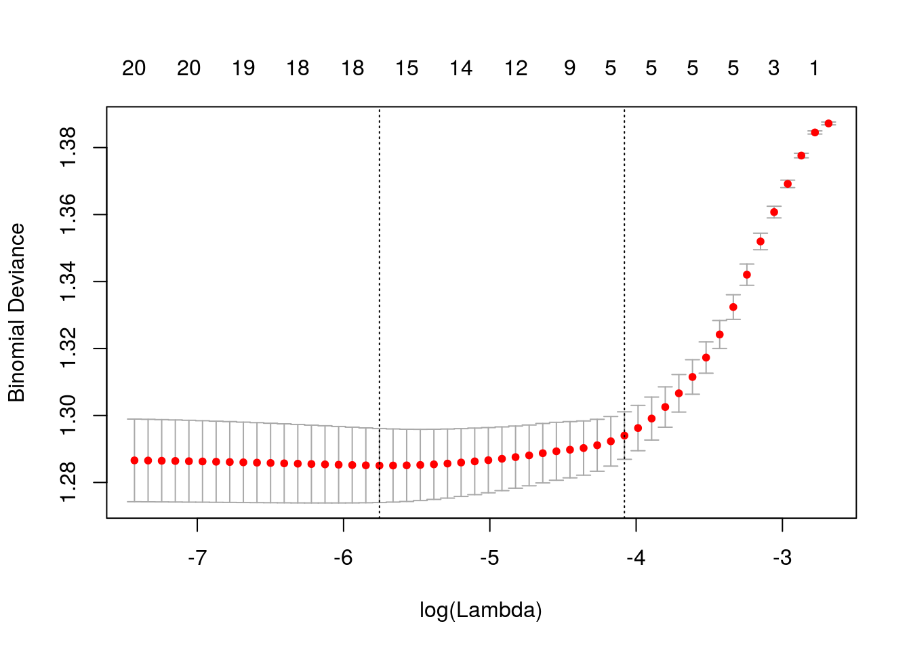
## [1] 0.003168Lambda ótimo.
## 21 x 1 sparse Matrix of class "dgCMatrix"
## 1
## (Intercept) 0.032687
## x1 0.414572
## x2 .
## x3 0.332071
## x4 0.062465
## x5 .
## x6 -0.077943
## x7 -0.602741
## x8 -0.037250
## x9 .
## x10 -0.367717
## x11 0.099494
## x12 -0.058783
## x13 0.099088
## x14 -0.081810
## x15 0.032377
## x16 -0.003516
## x17 -0.076739
## x18 -0.020300
## x19 0.316156
## x20 -0.004053Modelo ajustado usando o lambda indicado pela validação cruzada.
## 21 x 1 sparse Matrix of class "dgCMatrix"
## 1
## (Intercept) 0.027910
## x1 0.304821
## x2 .
## x3 0.218197
## x4 .
## x5 .
## x6 .
## x7 -0.467763
## x8 .
## x9 .
## x10 -0.251875
## x11 .
## x12 .
## x13 0.002373
## x14 .
## x15 .
## x16 .
## x17 .
## x18 .
## x19 0.216489
## x20 .Solução obtida fixando lambda = 0.015.